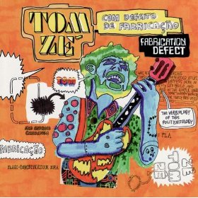
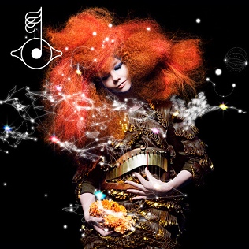
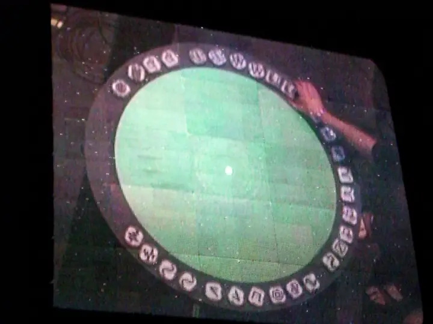
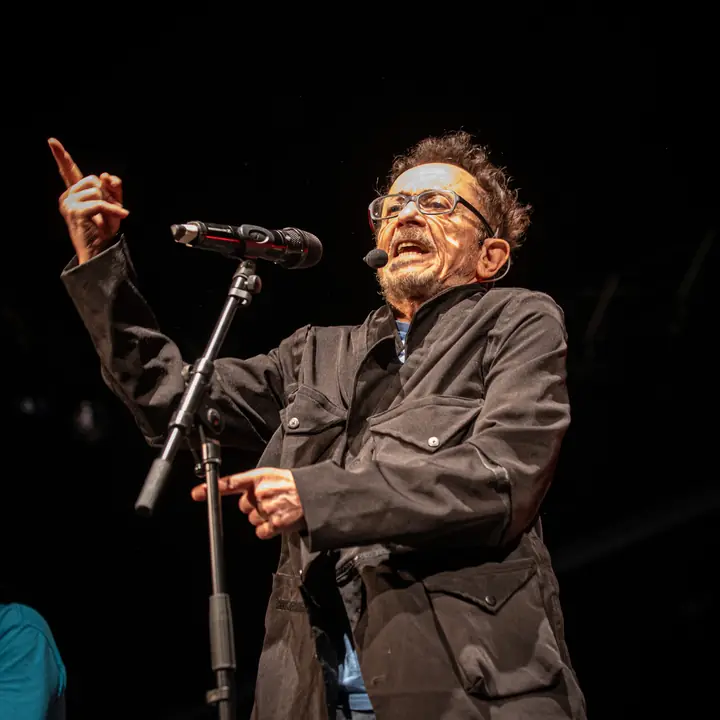
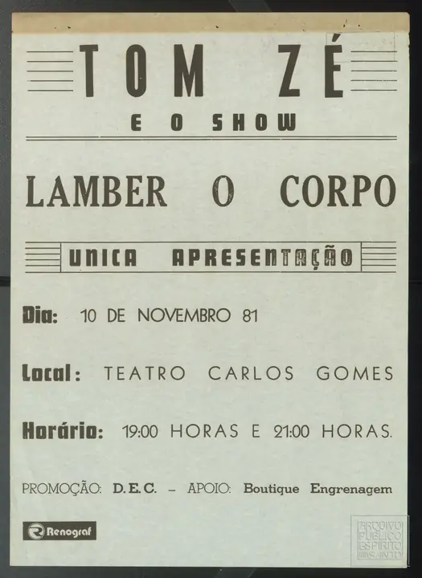
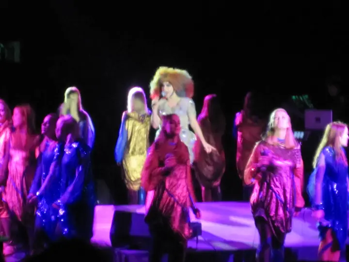

Working paper, version 0.0.8 · 13 November 2026
Shaped at the Threshold
What accompanying material makes accessible in a fixed recording, through Tom Zé’s Com Defeito de Fabricação (Fabrication Defect) and Björk’s Biophilia
Rodrigo Jazinski
Abstract
Accompanying material can do more than tell a listener what kind of record they hold. It can change the routes by which they reach what the recording contains. This essay develops that proposition through two releases whose material does that work. On Tom Zé’s Com Defeito de Fabricação (1998), the booklet sets out a method of composition by borrowing, credits each track with what it has taken (a work, a composer, a style or a figure outside music), and presents each track as a “defect”. On Björk’s Biophilia (2011), an app suite surrounds each song with a score, an animation, an interactive game and an essay on the song’s musical ideas. The question is what such material changes in what a listener can notice, identify, segment or follow when the recording stays fixed. These access effects are kept apart from framing effects: changes in how the music is imagined or judged.
The vocabulary begins with Tulving and Pearlstone’s distinction between information that is available and information that is accessible given the cues present, transposed here from memory to listening. The essay adds a level their word-list design could not separate, perceptual uptake: a feature can be present in the signal, taken up perceptually, and reported, and the three can come apart. Uptake is therefore measured apart from report, by marking features in time as the recording plays. For a credit that names a specific work, the distinction applies closely: the credit is a retrieval cue for music the listener already knows. Laboratory experiments on interleaved melodies suggest such a cue can work, at least at the level of report: a familiar tune hidden in a mixture of tones is heard once its title is given. None of them tests an album credit. For material that represents structure, the proposed mechanism is schema-based grouping and attention, not retrieval, and no study located has tested whether such material, against listening without it, changes what listeners detect in a recording.
The method is a desk-based synthesis of published evidence, graded under an explicit protocol. Of 25 graded links, one is Strong, seventeen are Suggestive, one is Contested and six are Open; no access link has been tested with either album’s material. The two albums are contrasting analytical cases, chosen to expose different mechanisms and their limits; effects on their listeners are predicted, not measured. Each prediction states a measure, a comparison and a condition under which it fails. The predictions include costs: credits may produce false recognitions or hide borrowings they do not name, and explanation may reduce enjoyment. Biophilia also tests the essay’s premise, since much of its material attaches to versions of the songs other than the album recordings.
Where the recording stays fixed, accompanying material does not alter the signal. It can alter the cues through which a listener reaches features of that signal. Its benefit should be largest where the signal leaves those features partly, but not wholly, separable, and, for credits, where the listener’s memory matches what the recording presents.
Framework · Section 1
Introduction: the recording and its threshold
Imagine two albums you have never heard. One has a garden on the cover, in soft greens and rounded lettering. The other comes with a booklet of chrome, leather and angular gothic type. Before either is played, you already expect something of each: a tempo, a texture, perhaps a volume. None of that expectation comes from the recordings. It comes from the material issued with them.
That material usually does one job. It tells a listener what kind of thing they are about to hear, and so places the record in a genre, a scene or a market. This essay is about two albums on which it does something else.
On Com Defeito de Fabricação (1998), Tom Zé published a short text on what he called an aesthetic of plagiarism, credited each track with what it had taken (a credit, in this essay, is a line in the accompanying material that names where something in the recording comes from), and presented the fourteen tracks as numbered “defects”. On Biophilia (2011), Björk released the album as a suite of apps in which each song came with a score, an animation, an interactive game and an essay on the song’s musical ideas. Both makers’ material points at things the recording already contains: a quotation, a repeated figure, an unusual metre. The question is what that changes.
Genette called the material that surrounds a text its seuils, its thresholds: neither inside the work nor outside it, but the zone through which a reader enters (Genette, 1997). The title of this essay borrows his word and narrows it. The threshold in question is a specific one: the material a maker issues with a fixed recording, and the cues that material carries for a listener. It does not refer to the psychoacoustic threshold of hearing. And it differs from Genette’s in one respect. A reader crosses a book’s threshold once, on the way in. A listener crosses an album’s threshold again on each hearing, and can return to the booklet or the app between hearings, so what the threshold makes accessible may change from one hearing to the next (section 5.4).
The argument rests on a distinction from memory research. Tulving and Pearlstone (1966) showed that people who had studied lists of words recalled more of them when given the category names as cues. Words that were not recalled without cues had still been stored. They were available but not accessible.
This essay uses that distinction in two ways. For credits that name a source, the use is close to literal: the source is stored in the listener’s memory, and the credit is a cue for retrieving it. For material that represents structure, the use is an analogy: the material supplies a representation of a target the listener has not stored, and its effect, if any, runs through perceptual organisation and attention. Section 2 separates the two and states the limits of the second.
A recording fixes what is available: every sound on it is there whether or not a listener notices it. Accompanying material may change what is accessible: what a listener notices, identifies, segments or follows. It may also change what the listener takes the sound to mean and how they judge it. The essay calls that framing, and reports access effects and framing effects separately.
The two albums are not typical, and they are not two equivalent experimental cases. They were chosen as deliberate, extreme uses of accompanying material, contrasting in what they do, so that each exposes a different mechanism and its limits. Each uses more than one function. The working hypothesis concerns their primary function. Tom Zé’s material mainly discloses: it names a method and its sources, so it should change what listeners can identify. Björk’s mainly instructs: it represents structure and invites the listener to act on it, so it should change what listeners can detect and follow. Section 8 states the test that would show whether these labels describe kinds of material or only these two albums.
The essay reports no new data and makes no claim about how actual listeners of either album responded. It assembles published evidence on how material issued with music affects expectation, perception and evaluation, grades that evidence, and derives predictions for the two albums. Some of those predictions are costs: material that cues recognition may also cue false recognition or hide what it does not name, and explanation may reduce enjoyment.
Section 2 sets out the concepts, the scope and the method. Sections 3 to 5 cover three layers of accompanying material: the carrier, the image and name, and text. Sections 6 and 7 take the two albums. Section 8 compares them. Section 9 sets out designs that could test the predictions, what each comparison estimates, and the alternative explanations the designs must rule out. Section 10 concludes, with the questions the essay leaves open.
Framework · Section 2
Concepts and method
This section sets out the tools the rest of the essay depends on. Each part answers a question that a reader would otherwise have to guess at. Section 2.1 says what it means for material to make something accessible, which is the essay’s central claim. Section 2.2 places the question in the existing literature on the material that surrounds texts and records, so that it is clear what is borrowed and what is new. Section 2.3 says which material counts, and why some close neighbours do not. Section 2.4 gives the model that keeps access apart from framing, and the measure that tells them apart. Section 2.5 states how the evidence was found and graded, so that every claim in later sections can be checked. Section 2.6 says what the essay cannot do. A reader who wants the albums first can go to sections 6 and 7 and return here; the predictions there use the terms defined below.
2.1 Availability, access and the analogy
Everything the essay predicts depends on one distinction: between what a recording contains and what a listener can reach in it. If the distinction is loose, any change in what listeners say could be read as a change in what they hear, and the essay’s claims could not fail. This subsection states the distinction exactly, says where it comes from, and says how far it carries over from memory research to listening.
In Tulving and Pearlstone’s experiments, availability is a property of a memory store, and accessibility depends on the cues present at retrieval (Tulving and Pearlstone, 1966). Their design could not separate perceptual uptake from retrieval, because the words had been studied and were no longer in front of the participant. Listening can separate them. Transposed to listening, the distinction therefore needs three levels, not two:
| Level | Term in this essay | What it means | Typical measure |
|---|---|---|---|
| Signal | Available | The feature is present in the recording at a level an attentive listener could in principle detect | None needed: fixed by the recording |
| Uptake (perception) | Taken up | The feature is grouped, segregated or attended to: heard as a unit, a line or an event | Localisation, segmentation or tracking during playback |
| Report | Identified or reported | The listener can say that the feature is there, where it is, or what it is | Recognition (sensitivity and criterion), naming, confidence |
Accessible is the umbrella term for the second and third levels: taken up, reportable, or both, by a given listener under given cues. The two can come apart, and the measure determines which is established. Material can change the third level without the second, as when a credit changes what listeners say without changing what they hear. Section 2.4 states how the two are told apart, and Figure 1 sets out where each kind of material acts.
The distinction applies through two mechanisms. For a credit that names a specific work, the analogy is close but not exact. The credit is a verbal label; the stored item is a memory of a piece of music, which holds many features at once: melodic contour, harmony, rhythm, timbre, words, a particular performance. The credit can aid retrieval only insofar as the features the listener has stored overlap with the features the recording presents. A credit that names a composer or performer can cue only a looser schema of their music; one that names a style, genre or tradition, only a category; and one that names a writer or a figure outside music can only frame (section 6.1). For material that represents structure, such as a score or an animation, there is no stored representation of this particular target. The listener does bring learned knowledge: of scales, metres, forms, the conventions of a style. What the material adds is a representation of where and what the target is. It may recruit those schemas, direct attention towards a feature, or support the segmentation of a signal that has not been heard in that form before. In that case the material does not retrieve an item; it changes the conditions under which the signal is perceptually organised. The working account is schema-based grouping (Bregman, 1990), introduced below, and the memory terms supply a vocabulary rather than a mechanism. Section 8 returns to this difference as the contrast between names that point outward and representations that point inward.
The literal case has been tested in the laboratory. Dowling (1973) interleaved familiar tunes, note by note, with distractor tones in the same pitch range, and played each mixture repeatedly. Six practised listeners could not pick the tunes out while the ranges overlapped. Told the title of the tune to listen for, all six heard it on every trial where it was present, after a mean of 3.6 repetitions, and none reported it when it was absent. Dowling, Lung and Herrbold (1987) replicated the effect with less trained listeners and a single presentation. Bey and McAdams (2002) found that hearing an unfamiliar target melody before the mixture improved its detection and reduced response bias. Neither line of work tests an album credit. Together they suggest that, in these conditions, knowing what to listen for can make accessible a sound that was always available. The conditions are a familiar tune named in advance or a melody heard in advance, in brief tone sequences rather than recorded songs.
A demonstration in Dowling’s manner, synthesised for this essay; not his stimuli. Tones last an eighth of a second and alternate tune and distractor; each mixture plays three times. The notes drawn are the notes in each file, taken from the script that made them. Headphones help.
The converse is also documented in audition. Listeners who attended to one of two conversations in a recorded auditory scene often failed to notice a clearly audible voice that walked through the scene for nineteen seconds, repeating “I’m a gorilla” (Dalton and Fraenkel, 2012). What a listener is set to hear can limit what else in the signal they take up. A cue that directs attention to one target can, by the same route, leave another unheard (section 6.4, prediction 6d).
The step from these experiments to an album is large, and it should be stated plainly. Dowling’s mixtures held two streams of pure tones in a controlled pitch range. A recorded song holds voices, words, many instruments, production effects and, on Tom Zé’s album, deliberate noise, all at once. The listener’s search also competes with meaning. A borrowed melody on a popular record arrives with its own associations, and with the words sung over it, so a listener searching for a named source faces semantic as well as acoustic distraction. The laboratory work suggests that a name can change what listeners report hearing. It does not show how large that change is, or whether it survives, in a dense and meaningful recording. That is what the predictions in sections 6 and 7 are built to test.
A cue does not work on its own. Tulving and Thomson (1973) showed that a retrieval cue is effective only if it matches how the item was encoded. This encoding specificity principle yields the essay’s main boundary condition. In music, a listener encodes a piece as they first came to know it: in a key, at a tempo, with an instrumentation, a performer and perhaps words. A credit retrieves that memory, and the memory then has to be matched against what the recording presents. Where the two share the features that carry the piece’s identity, such as its melodic contour, the credit should help. Where the recording has changed those features, the credit has little to work with. A listener who knows a concerto as orchestral music may get little from a credit when its melody is sung, roughly, with new words. Bey and McAdams found the same in miniature: a cue transposed away from the target’s pitch helped less than an exact one. Effects of accompanying material should therefore be moderated by listening history. That history need not rest on asking listeners what they know: expectations of this kind can be modelled from exposure (Pearce and Wiggins, 2012), which makes it possible to estimate how predictable a borrowed passage is for a given musical background. A credit may also help an unfamiliar listener learn a source, which is a different effect (section 2.4).
Two bodies of work supply the perceptual route by which structural material could act. Theories of musical expectation hold that listening is predictive: listeners anticipate what comes next, and those anticipations shape what they notice and feel (Meyer, 1956; Huron, 2006). Auditory scene analysis distinguishes primitive grouping from schema-based grouping, in which learned knowledge helps a listener pull a pattern out of a mixture (Bregman, 1990). The interleaved-melody studies provide a laboratory model of that route. A score or an explanation could activate a schema in the same way. Whether it does is the question, not the premise.
2.2 Paratext and the literature on liner notes
Accompanying material is not a new object of study. Literary theory, media studies and popular-music studies have all written about it, and this essay borrows their vocabulary. Setting out what they have said shows where the present question sits: most of that work asks what the material means, and very little asks what it changes in what a listener can hear.
Genette’s account of paratext was built for books (Genette, 1997). He divided it by location. Peritext is the material attached to the object itself: the title, the cover, the preface, the notes. Epitext circulates apart from it: interviews, correspondence, publicity. He also described paratext by function rather than form, asking of each element where it sits, when it appears, in what mode, who sends it to whom, and what it is for. That functional approach is the one this essay follows. For a recording, the peritext is the sleeve, the booklet, the disc label and the track titles. The epitext is the interview, the press release and the artist’s website. The scope conditions in section 2.3 keep mainly to the peritext, and admit a companion work such as Biophilia’s apps only when it is issued under the album’s title and refers to its contents.
Gray (2010) extended Genette’s account to film and television, where trailers, posters and promotional material can shape a work’s meaning before anyone has seen it. His point is that paratexts do not only frame a text; they partly make it, since many viewers know a film first, or only, through them. He also distinguished paratexts met before the work from those met during or after it. That timing matters here. A credit read before listening sets a search; a credit read afterwards can only revise a memory (sections 4.3 and 9).
Recorded music has its own literature on this layer. Biron (2011) treats album liner notes as a form of writing in their own right, and an album as made up of many such texts. Bottomley (2016) shows how reissue packages reframe older recordings for new listeners. Supper (2018) comes closest to the present question. She argues that lo-fi musicians use liner notes as curatorial practices that draw attention to tape hiss and other flaws, inviting listeners to hear them as an aesthetic choice rather than an accident. Her account has an access half and a framing half: the notes point to flaws a listener might not notice, and ask that they be judged as chosen. Her evidence is the notes themselves, not listener data. Listeners are invited to listen for the hiss rather than past it.
This essay differs from Supper’s in one respect. Her liner notes invite a mode of listening suited to a genre. The question here is narrower: whether accompanying material changes access to particular contents of a particular, fixed recording. The two questions overlap, and predictions 6e and 6f (section 6.4) draw on Supper, because Tom Zé’s “defect” frame works much as lo-fi liner notes do.
2.3 Scope
A question about accompanying material could take in everything around a record: concerts, merchandise, playlists, reviews. Without a boundary, the evidence could be stretched to fit any prediction. The conditions below say which material counts, and the exclusions say what is set aside and why, so that a reader can see what the essay’s claims cover and what they do not.
Material is in scope only if it meets three conditions.
- Issued with the recording: by the artist or label, under the album’s title, and referring to the contents of this recording. This includes the album title and track titles, and companion material sold separately that meets the same test, such as Biophilia’s app suite, which preceded the album by months. Merchandise issued under the album’s title but not referring to its contents is excluded.
- Met on the way to or during listening: before or during the exposures a listener actually gives the recording, including repeated listening.
- Bears on what is heard: it shapes what the listener expects, notices, segments, identifies or evaluates in the sound. What owning or displaying a record says about a person is excluded, unless it changes what the listener expects to hear.
The conditions exclude several layers often discussed alongside accompanying material:
| Excluded | Condition failed | Reference |
|---|---|---|
| Live performance | No fixed recording | Auslander (2008) |
| Live albums | Audience and room are part of the recorded signal, so there is no separate accompanying layer | Auslander (2008) |
| Audiovisual performance research | Concerns visual information about performers, not material issued with a recording | Tsay (2013); Platz and Kopiez (2012) |
| Surface noise and wear | Inside the signal of a particular copy, so the recording is not fixed across copies | Katz (2004) |
| Streaming-platform paratext: playlist titles, platform copy, algorithmic artwork | Condition 1: not issued by the artist or label | — |
| Merchandise | Conditions 1 and 3: not part of the release, and bears on display rather than hearing | — |
| The vinyl revival as a consumer practice | Condition 3: concerns the value of owning a format, not what it makes accessible | Bartmanski and Woodward (2015) |
Two exclusions need more than a line, because the excluded work is close to the question and its lessons carry over.
The first concerns what a record says about its listener. Covers and names signal who a record is for as well as what it sounds like. Students hold consistent, partly accurate stereotypes about the fans of different genres: their personalities, values and habits (Rentfrow and Gosling, 2007). A cover that places a record in a genre therefore also places its listener in a social group, and a listener may read it that way first. This matters because the same visual cue can act on two things at once: on what the listener expects to hear, and on who they take themselves to be in hearing it. The essay counts the first and sets the second aside. Such signals count here only where they change what a listener expects to hear, as the gendered expectations in the typeface study of section 4.1 did. The same line governs platform material. Playlists, platform copy and algorithmic artwork plainly shape expectation, and many listeners now meet albums through them. They are excluded from this study because the makers did not issue them, and the essay’s claims concern what makers can do with the material they control. They remain part of the wider phenomenon, and may have effects the present analysis does not cover. That is a limit, not a ranking: it does not show that maker-issued material is the layer that most shapes listening today. It also has a consequence for the two albums. On a streaming service, Tom Zé’s booklet is absent and only the cover, the album title and the numbered defect titles survive, and Biophilia’s apps are absent altogether. Which listeners meet which material is therefore part of every prediction (sections 6.4 and 6.5).
The second concerns performance. A meta-analysis of 15 studies found that seeing performers improved ratings of performances, with a medium effect size (Platz and Kopiez, 2012). Tsay (2013) found that people judged music competitions more accurately from silent video than from sound. A later replication obtained that effect with Tsay’s original clips and task, but not when both the clips and the task format were changed, so that the cause could not be isolated; its authors concluded that the effect is replicable but of limited interpretability (Mehr, Scannell and Winner, 2018). This is the closest neighbour of the present question, and it teaches two things. Information that does not come through the ear can outweigh the sound in judgement. And such effects can depend on the particular stimuli used, which is a caution for any prediction built on a few studies. The evidence is nonetheless excluded from grading: it concerns performers’ bodies, seen during performance, not material issued with recordings. It is cited as context and not used as evidence for the predictions (Appendix A, L24).
2.4 Analytical model
The same booklet can help a listener hear a borrowed melody and make them like the record more, and a study that measured only liking would mistake one for the other. This subsection gives the model that keeps those effects apart: what the material is, what it does, and how a test can tell which it did.
Levels, materials and measures as drawn in Figure 1; definitions from the table in section 2.1; functions and ledger links from the table in section 2.4, each placed at the level its mechanism names. The original figure is deposited with the paper: SVG on Zenodo.

Figure 1. The levels of access and where accompanying material acts. Operative material, such as Biophilia’s “Virus” app, changes what plays (section 7.5). A structural representation acts on uptake; a credit naming a work cues retrieval at the level of report and sets the search that uptake carries out; titles, texts and attributions act on judgement. Each level has its own measure. A gain in sensitivity at the level of report can still arise after perception, in memory or decision, so claims about uptake rest on time-locked localisation; a shift in criterion alone is response bias, not access.
The essay separates the form of the material from what it does. Forms are the carrier (section 3), the image and the name (section 4), text (section 5), and notation, visualisation and interaction (section 7). Any form can serve more than one function: a title can signal a genre and also frame evaluation. One set of functions, mechanisms and effect types is used throughout, with the links in the evidence ledger that bear on each (Appendix A):
| Function | Mechanism | Effect type | Ledger links |
|---|---|---|---|
| Category signal | Expectation setting | Framing; access where an expectation changes what is noticed | L1–L4, L26 |
| Source identification | Retrieval cueing: a name matched against a remembered source | Access | L8, L9, L12 |
| False recognition and miscueing | Response bias from a name; a wrong name diverting search | Access (error) | L7, L10, L11a, L11b, L25 |
| Structural guidance | Attentional cueing and segmentation by a representation of units, lines or repetitions | Access | L17, L18, L21, L22; attentional costs L19, L20 |
| Evaluative framing | Supplying terms of judgement, or prestige | Framing | L5, L6, L13, L14, L16 |
| Imagery and narrative | Supplying extramusical scenes | Framing | L15 |
Access effects change what is noticed, identified, segmented or followed. Framing effects change how the sound is evaluated, imagined or felt. Figure 1 places them on the three levels of section 2.1, with judgement as a fourth.
The two kinds of effect can be told apart, and the way to do it deserves a slower statement, because the rest of the essay depends on it. Take a recognition task. A listener hears twenty passages. Ten contain a borrowed melody and ten do not, and after each the listener says whether the borrowing is there. Two numbers describe their answers. The hit rate is the share of the ten borrowed passages they call borrowed. The false-alarm rate is the share of the ten clean passages they also call borrowed. Signal detection theory turns these into two measures. Sensitivity, written d′, measures how well the listener separates passages where the feature is present from passages where it is not. The criterion measures how readily the listener says yes, whatever the passage.
Now suppose a credit is given. A credit, in this essay, is a line in the material issued with a record that tells the listener where something in it comes from. The most familiar credits name people: who wrote a song, who played on it, who produced it. The kind that matters here names a source: a note that a track contains a sample of another recording, or that a passage quotes another work. On Tom Zé’s album every track carries a credit of this kind. The credit for “Juventude Javali”, for instance, names Tchaikovsky’s Violin Concerto in D major, whose melody the track borrows (section 6.1). A credit like this tells a listener what to listen for, but not where or how. It names the concerto, and leaves the listener to find it among the voice, the Portuguese words and the arrangement. That is why it can work as a cue for memory, and also why it can mislead. A listener who knows what they are meant to hear may hear it, or may say they do, whether or not they have found it.
In the example, the listener reads the credit before the twenty passages, and it names the borrowed work. Consider two ways the answers could change. Hits and false alarms are counted out of ten passages each; d′ and the criterion are computed from the unit normal distribution and rounded to two decimals.
| Condition | Hits | False alarms | Sensitivity (d′) | Criterion | Reading |
|---|---|---|---|---|---|
| No credit | 6 | 3 | 0.78 | 0.14 | Baseline |
| Credit, pattern A | 8 | 3 | 1.37 | −0.16 | Hits rise, false alarms do not: sensitivity rises, though the criterion also falls. An access effect |
| Credit, pattern B | 8 | 5 | 0.84 | −0.42 | Hits and false alarms both rise: sensitivity barely moves, the criterion falls. Response bias |
In both patterns the credit raises hits from six to eight. A study that counted only hits would report the same gain. But in pattern B the listener says yes more often to everything, borrowed or not. The credit has changed what they are willing to say, not what they can tell apart. Only pattern A shows that the credit helped them separate borrowed passages from clean ones.
Out of ten passages with the borrowing and ten without, as in the table above; d′ and the criterion are computed from the unit normal distribution, as the paper states, and drawn under the equal-variance model that formula assumes. Counts of 0 or 10 would give infinite values, so the sliders run from 1 to 9.
That separation is the minimum. Firestone and Scholl (2016) argue that apparent effects of knowledge on perception have so far been explained by response bias, memory, attention to different features, or task demands, and that no study has yet shown cognition changing perception itself. Their argument bears directly on this essay, because its strongest claim, that accompanying material changes what is heard and not only what is said, is the kind of claim they doubt. The essay takes their challenge as a constraint, not a footnote. Uptake as defined here includes attention, which they count among the ordinary explanations, so the essay claims no effect on perception beyond attention and grouping. Sensitivity separates perception from bias only at the level of responses: a gain in d′ can still arise after perception, in memory or decision, that is, at the level of report in Figure 1 rather than at the level of uptake. Claims about uptake therefore rely on tasks that ask where a feature occurs during playback, such as time-locked marking, segmentation and tracking, so that the response is tied to the moment of hearing rather than to recall afterwards. The designs in section 9 use them for that reason. If an effect appears only in yes–no recognition, the claim reduces to one about report.
That is not a lesser result for every prediction. Identification is one of the four kinds of access the essay names, and for a recorded song it may genuinely happen at the level of report: a listener can recognise a source from a short fragment and a few cues. The essay therefore ties each verb to a measure. Identify is measured by reports: recognition, naming and confidence. Notice, segment and follow are measured by time-locked localisation. A prediction about identification can be confirmed by a gain in d′; a prediction about uptake cannot.
A further distinction concerns what an access effect consists in. Suppose a listener reads a credit or studies a score and then identifies a feature. Three things might have happened. The material may have directed attention to a feature already perceptually available (revealing). It may have helped the listener acquire a new representation through which the feature became detectable (teaching). Or it may have supplied a description that the listener then applied, changing identification without changing uptake (labelling). These should not be collapsed into a single access effect. The framework distinguishes them conceptually; the designs separate them in part, through pre-tests of what listeners already know (section 6.4) and through matched verbal controls (section 9). They cannot separate them fully: a listener who first hears a structure while studying its representation has been taught it, whatever the pre-test showed, so the designs can bound the share of an effect that is revealing but not settle it. The distinction matters most for Biophilia, whose stated purpose is to teach.
The essay’s claim concerns access. Framing effects are recorded because they matter for the predictions, but they are kept apart. Two hypotheses run through the analysis. The detectability hypothesis holds that a cue’s benefit depends on how separable the feature already is in the signal. The encoding-match hypothesis holds that a credit’s benefit depends on how closely the listener’s memory of a source matches the source as the recording presents it. The first concerns the relation between signal and perception, the second the relation between signal and memory. Section 4.2 gives the basis of the first and states it as an interaction that can fail; section 8.4 sets the two side by side.
Access should also be kept apart from a broader notion often applied to multimedia releases: immersion. Research on audiovisual experience uses the term for a state of deep mental involvement, and distinguishes it from presence, the sense of being in a place (Agrawal et al., 2020). Biophilia’s star field, its touchscreen instruments and its games plausibly aim at immersion, and Tom Zé’s android narrative invites a kind of absorption too. But immersion is a state of the listener, not access to a feature of the recording. The two can come apart in both directions. Material may deepen involvement without making any feature easier to detect, and it may make a feature detectable while breaking involvement, as an analytic note may (section 5.1). This essay does not grade evidence on immersion, which is a large literature with its own questions. It treats immersion as a possible mediator or competitor of access, measured where it might explain a result (section 9.3), and leaves its study to that literature.
2.5 Method
A synthesis is only as trustworthy as the way its evidence was found and weighed. This subsection states both, so that a reader can check any grade, disagree with it on stated grounds, or rerun the searches.
The question itself did not begin with a search. It grew over a long period of listening: to Tom Zé, and to the way his records seemed to tell their listener where to look; to Björk, and to the way Biophilia offered to teach its own structure; and to the author’s own questions, as a maker, about how the form of a work and the material around it shape what a listener hears. Those questions were narrowed over several months into one that published evidence could address: what material issued with a fixed recording changes in what a listener can reach. The searches reported here were run to test that question, not to find it.
The method is a scoping synthesis of published evidence, not a meta-analysis. For each link from a form of material, through a mechanism, to an outcome, it asks whether the link has been tested, how, and in which direction. It does not estimate effect sizes.
Grades follow the protocol of Cognitive effects at the interfaces (Jazinski, 2026), which grades how well established an effect is, not how large it is:
- Strong: at least three independent studies, including at least one experimentally manipulated comparison; effects in the predicted direction; no major published contradiction.
- Moderate: at least two independent studies, at least one of which partly addresses a named confound.
- Suggestive: one direct study, or converging indirect evidence.
- Contested: direct results in opposite directions, or an unresolved methodological dispute.
- Open: no direct test located (Open, untested), or the only direct test located is a null result (Open, null). The two are marked separately in the ledger, because a gap and a weak null carry different risks.
Three terms in the protocol are defined as follows. Studies are independent if they come from different research groups; studies by the same group count as one line of evidence unless their samples and designs differ. A named confound is a specific alternative explanation, such as actual performance quality, familiarity, order of presentation or demand, that a study’s design rules out at least in part. A study is direct if it manipulates the same class of material and measures the same class of outcome as the link.
Links whose evidence lies outside the scope conditions are recorded in the ledger as context and marked Not graded (L23, L24). A link whose outcome is neither access nor framing, but whose evidence is within scope, is graded for what it does show (L19). Six further rules apply:
- Each link is defined as one class of manipulation and one class of outcome before it is graded, so that broader propositions are not graded by pooling.
- Results in opposite directions make a link Contested when they test the same class of manipulation and outcome; conflicting indirect evidence leaves a link Open, with the conflict recorded.
- A result in the opposite direction counts even if it is unpublished, that is, not published in a journal or book (a thesis or student project, for instance), but unpublished work cannot raise a grade.
- A located null result is recorded but does not establish the absence of an effect, so a link whose only direct test is a null is graded Open (null). A null beside a direct result in the predicted direction is not a conflict under rule 2, which requires opposite directions; it is recorded with the grade, as Paros’s null is in L13.
- A link is graded for the population in which its effect was found. Where the effect is absent in part of the tested population, that boundary is recorded with the grade. A boundary of this kind restricts the population; it is not read as a published contradiction, which concerns direction.
- A grade describes the general link. Its distance from the albums is recorded separately, in the ledger’s last column, which opens with one of four codes. Direct: tested with the material of one of the albums. Near: the same class of material and outcome, but different music, listeners or setting. Analogical: a different manipulation standing in for the material, such as a heard target for a verbal credit. Context: evidence that bears on the question without testing a link. Where no evidence was located, the column names the prediction that would test the link. No access or framing link is Direct; one other link is: L19, an interview study of people using Biophilia’s app, whose outcome is reported attention demand, not what was heard. A study counts as direct for grading when it exposes participants to the class of material, by design, and measures the outcome; a comparison arm is not required, which is why L19 is graded Suggestive.
The verbs of the text follow the grades. A Strong link is said to show; a Moderate link to indicate; a Suggestive link to suggest; Contested evidence to conflict; an Open link is untested. Where the text says that a study found something, it reports that study’s result, not the grade of the link.
Each study entry records its design, sample and stimuli. Appendix A gives the ledger. All grades were assigned by the author alone; no second rater has graded them. The grades most open to disagreement are those where a link straddles two outcome classes, such as L17 (appraisal against detection), or two populations, such as L6 (younger against older adults). A second rater will be asked to grade those links first, so that any disagreement is located where it matters.
Searches were run between September and November 2026 through a general web search engine: one logged string for each layer of material, and targeted searches for each source, object and reviewer suggestion (Appendix B). Results were screened against one inclusion rule: empirical work on how material issued with music changes expectation, perception, recognition or evaluation, in English or Portuguese, of any date. AI tools were also used to propose sources (see Declarations); a proposed source entered the essay only once its record had been found. On 12 November 2026 the same strings, together with strings for the links the web searches had not covered (the carrier, liner notes and flaws, transfer from app to album, and visual representation against none), were run through three bibliographic databases: OpenAlex and Europe PMC for all sixteen strings, and Semantic Scholar for five. The first 25 records for each string in each database, in order of relevance, were screened against the same rule: by title, by abstract where the title left the decision open, and in full text for every study taken into the ledger. Of 701 unique records, six studies met the rule and were added to the ledger (a new link, L26, and entries in L13, L14 and L18); eight were already cited; thirteen were noted as related but not graded (Appendix B). Every reference in the essay was also looked up in Crossref: 56 of the 90 matched a Crossref record; the others are books, web pages and print items without one, and one paper deposited on Zenodo, whose DOI was checked against its DataCite record. Absence of evidence in the ledger therefore means that none was located in these searches, not that none exists. This qualification applies to every Open grade in the essay, and is not repeated at each one.
The two albums serve as examples. The essay predicts how their material should affect listeners; it does not measure it. Statements by the makers and their collaborators about their aims are reported as attributed claims, not as established motives.
For this essay, the albums’ material was examined through published descriptions, catalogue records, reproductions and secondary analyses, not through the physical copies. This is a limit, and it is stated as one, but it does not undermine the analysis, for three reasons. First, the objects are recent and well documented. Both albums were commercially released within the last three decades, and their booklets, credits and apps have been transcribed, reproduced and analysed by several independent scholars, in two languages, as well as described by the makers’ own collaborators. Second, where those sources overlap, as they do on the structure of Tom Zé’s booklet, its two texts and the eight credits that more than one source transcribes, their agreement is itself evidence. Where they disagree or fall silent, as on the composer of track 5 and the full English text of the plagiarism text, the essay says so and does not fill the gap. Third, the predictions do not depend on any single detail of the objects: each is stated for a named edition and language, so a correction to the record would change which material a test uses, not the logic of the test. Working from documentary records of this kind is ordinary practice in historical and discographic research. Inspection of the physical copies is planned, and is expected to settle the open details listed in section 6.1, not to change the argument.
2.6 Limits
The limits are stated here, before the albums, so that a reader can weigh each later claim against them as it arrives.
The essay has a single author and has not been peer reviewed. It contains no listener data. Its sources are in English and Portuguese only, and its grades were assigned by one rater.
The deeper limits lie in the literature it draws on. Five shape every conclusion.
- No study of albums. No study located tests the effect of an album’s issued material on what listeners can detect in that album. Every graded access or framing link is at a distance from the cases, and the ledger records how far.
- Short excerpts, single hearings. The experiments use excerpts of seconds or minutes, heard once or a few times. Albums last most of an hour, are heard repeatedly over years, and come with texts that listeners return to (section 5.4).
- Narrow repertoires and samples. Most stimuli are Western classical or film music, synthetic tones or nursery tunes, and most participants are students or practised listeners. Neither popular song nor the Brazilian traditions Tom Zé draws on appears in the experimental record located.
- Ratings more than perception. Much of the work on accompanying material measures liking and judgement. Far less measures detection, and almost none measures localisation during playback, the level at which the essay’s strongest claims would have to be shown (section 2.4).
- Small numbers and uneven publication. Several key results rest on small samples (six listeners in Dowling’s catch trials) or on single studies, and the null and unpublished results located suggest that what is published may not be the whole record.
These limits do not make the predictions weaker than stated; they are the reason the predictions are stated as tests rather than findings.
Layers of material · Section 3
The carrier
The first thing issued with a recording is the object that carries it. A 78, an LP, a cassette, a CD, a file and an app are not neutral containers. Katz (2004) documents how recording technologies shaped what was recorded and how it was heard, and Sterne (2012) treats the format itself as an object of analysis. For this essay, the point is narrower. A carrier can act as a category signal before any image or text, suggesting what era, market and kind of listening a recording belongs to. One study, located by the database searches, tests a version of that suggestion. Listeners who were told that they were hearing vinyl or an mp3, whichever was in fact playing, rated sound quality in line with what they had been told (Enstroem and Schmaltz, 2022; Appendix A, L26). The study concerns a stated format, not the carrier’s own appearance, and the quality of the sound, not what is heard in the music. It suggests that a carrier can frame evaluation. It says nothing about access, and any effect of a carrier on what is heard would count as framing until it is shown to change what listeners can detect.
The carrier matters to the comparison in a more fundamental way. It determines not only where accompanying material sits, but what relation that material has to the recording. Three relations can be distinguished:
- Supplementary. The material accompanies a recording that can be played without it. A CD with a booklet is the standard case: the listener may read the booklet or not, before, during or after listening, and the recording is the same either way.
- Embedded. The material is the environment through which the recording is met. An app that plays the song inside a visual and textual frame is the case: the listener can still attend to the sound alone, but the route to it passes through the material.
- Operative. The material changes what plays: which version, in what order, for how long. An app that lets the user build their own version of a song, or that stops the song when a game is won, is the case.
Definitions as in the list above; where each album sits, as stated in this section and in section 7.1. The drawings are schematic.
The three relations differ in what the material can do. Supplementary material can change access to a fixed work. Embedded material can do the same, but competes with the sound for attention while it does so. Operative material participates in deciding which work, and how much of it, is encountered. At that point it has crossed the threshold and become part of what is available.
Tom Zé’s text rides on a conventional carrier, a CD with a booklet: its relation to the recording is supplementary. Biophilia’s material is, in its app edition, the carrier itself: the recording sits inside the material, and in most of the song apps the material is operative (section 7.1). On one album the accompanying material sits beside the recording; on the other, the recording sits inside the accompanying material.
The carrier also sets how long the material lasts. A printed booklet degrades slowly and stays legible. An app degrades with its software: when it fails, the recording survives on CD and streaming services, but the instruction layer must be reconstructed from documentation (section 7.6). The two albums thus sit at opposite ends of the carrier’s durability, and on these two albums the operative material has proved the more fragile.
Layers of material · Section 4
The image and the name
Before a word of a booklet is read, a listener has usually seen a cover and read a title. These are the most widely met forms of accompanying material, and the least deliberate on the listener’s part: a cover is seen in passing, a title is read without choosing to read it. They are also the layer with the most experimental evidence, because they are easy to manipulate: the same music can be shown with two covers, or announced under two names. This section asks what that evidence shows. Most of it concerns framing, how music is expected and judged. One study bears on the detectability hypothesis, because it found no effect where the music was already strongly characterised.
4.1 Category signal
Cover images and lettering usually work as genre signals. Fabbri (1982) described a genre as a set of musical events governed by socially accepted rules, including semiotic and commercial ones, and the look of a record belongs to those rules. A listener who has learned them reads a cover as a prediction about sound: a particular typeface, palette or photograph says, in effect, that this is the kind of record that sounds like that.
The clearest test of that prediction is a study of typeface alone. Venkatesan, Wang and Spence (2022) put angular or rounded lettering on otherwise identical mock CD covers, in three experiments:
- Expectations. With angular type, participants expected the music to be more angular, fast, rough, masculine, exciting and violent. With rounded type, they expected it to be rounder, slower, smoother, feminine, gentle and calm.
- Neutral music. When participants then heard music rated as neither round nor angular, typeface shifted ratings of valence, with music judged more pleasant under rounded type, but not ratings of arousal.
- Strongly characterised music. When the music was already clearly round or angular, no effect of typeface was found.
The design is valuable because it isolates one feature. Everything on the covers was held constant except the shape of the letters, so any difference in expectation came from that shape alone. The first result suggests that one visual feature can shift expectations of music not yet heard. The second suggests that the expectation can carry into the evaluation of what is then heard, though only partly: pleasantness moved, energy did not. The third, a null result, is discussed in section 4.2.
Why would the shape of letters predict the sound of music? Two routes are possible, and they predict different things. The first is learned convention: listeners have seen angular type on heavy metal records and rounded type on gentler ones, and read the cover through that experience. The second is crossmodal correspondence. People consistently match features across the senses, such as high pitch with small, bright objects, and angular shapes with abrupt, harsh sounds; Spence (2011) reviews evidence that some of these matches appear across cultures and in young children, which suggests they need not depend on learning a genre’s conventions. Venkatesan, Wang and Spence’s angular–rounded contrast is the visual half of one such correspondence. If the effect runs through convention, it should be weak in listeners who do not know the genres concerned, and should attach to genre labels. If it runs through correspondence, it should persist in such listeners, and should be strongest for the features that have a direct crossmodal match, such as roughness and speed, rather than for genre attribution. Both routes may operate, and the study does not separate them. For this essay the point is that a cover need not be read as a genre sign to shape expectation: its visual form can do it directly.
A separate line of work concerns whole covers. Joye and Fennis (2024) found, in archival chart data, that albums whose artwork was dominated by horizontal and vertical lines had covers judged more appealing and performed better in the charts. In two experiments, people listened longer to music shown with such artwork; whether this ran through liking of the cover and the song was explored, not established. The result is interesting because the outcome is behaviour, listening time, rather than a rating. But it is a framing effect on consumption, not evidence of access: people listened longer, not more perceptively.
Taken together, the evidence on covers suggests that a visual feature of the material can shape what listeners expect and, for music that leaves the matter open, how they judge it. None of it tests whether a cover changes what a listener can detect in the music. That is the gap the rest of the essay addresses.
4.2 The detectability hypothesis
The third typeface experiment found no effect when the music was already clearly round or angular. It suggests a hypothesis used throughout this essay: accompanying material should matter least where the sound settles the question. The basis is weak in two ways. A single null result cannot show that a cue has no effect; it only fails to find one. And the outcome was a rating of valence and arousal, which in this essay’s terms is framing, not access.
Where access has been measured, the pattern is not simply “more ambiguity, more effect”. In Bey and McAdams (2002), knowing the target melody helped when target and distractors were partly separated in pitch. It did not help when they fully overlapped, where there was no sensory basis for separating them, or when they were far apart, where performance was at ceiling. Dowling’s familiar tunes, by contrast, were recovered even with full overlap (Dowling, 1973). Bey and McAdams offer two explanations. Dowling’s tunes were stored in long-term memory, which may support a search that a just-heard melody cannot; or local pitch differences between his tunes and their backgrounds allowed partial segregation even where the ranges overlapped.
The hypothesis is therefore stated as an interaction that can fail in either direction (L9, Suggestive; L3, Open, null). Define a feature’s baseline detectability as unbiased sensitivity (d′) for that feature among listeners without the material, estimated in a pilot sample separate from the main study and checked for reliability before the main study is run. For a borrowing, baseline detectability is estimated among pilot listeners who pass the source pre-test, so that it measures separability in the signal and not familiarity with the source. The benefit of the material should be small where baseline detectability is near floor or near ceiling, and largest in between. The bands that count as floor and ceiling, or a quadratic term, are fixed at preregistration, before the main sample is collected. A benefit that changes steadily in one direction as baseline detectability rises or falls would count against this form, and so would a benefit that does not vary. The test needs several targets whose baselines span the bands, not one. For familiar sources, the floor may lie lower than for unfamiliar ones.
Low detectability has two sources, and they should be kept apart. A feature can be weak: present but quiet, brief or low in the mix, like an inner contrapuntal line under a lead melody. Or it can be masked: present at full strength but buried among other sounds that share its range, as a familiar melody can be buried in dense noise. A cue may help with masking, by telling the listener which of several competing streams to follow, more than with weakness, where there may be too little signal to follow at all. The pilot that estimates baseline detectability should therefore record which source each target’s difficulty comes from.
Both files contain “Twinkle, Twinkle” twice, synthesised for this essay. In the first the tune is quiet under a louder line well above it; in the second it is at full level among three competing notes in its own range at every step. Bar shading shows level.
The null result on ratings is graded Open, null (Appendix A, L3); the access form rests on one study that tests it and is graded Suggestive (L9), with Dowling’s result as a qualification. The hypothesis bears on both albums: Tom Zé’s borrowed fragments vary in how recognisable they are, and Biophilia’s structural features vary in how audible they are. Only the second is numbered as a prediction (7e), because Tom Zé’s album has too few verified borrowings to span the bands (section 6.4). Section 8.4 sets it beside the encoding-match hypothesis.
4.3 Titles and names
Titles are the smallest piece of accompanying material and the one almost every listener meets. They pass all three scope conditions: they are issued with the recording, met before listening, and bear on what is heard. They are also the most durable layer. A booklet can be lost and an app can stop working, but a title survives every change of carrier, including the move to streaming, where it is often the only material the maker issued that still reaches the listener.
A title can serve every function in section 2.4. It can signal a category, as a title in a particular language or register does. It can identify a source, when a track is named after the work it borrows. It can guide attention to structure, as a title such as “Fugue” or “Variations” does. And it can frame evaluation and supply imagery, which is where most of the evidence lies.
Anglada-Tort, Steffens and Müllensiefen (2019) tested titles and names directly. In the first experiment (n = 48), the same excerpts were rated more positively when paired with easy-to-pronounce names than with hard ones. In the second (n = 100), excerpts were judged lowest under negative titles, and excerpts were liked more with titles than without. These are framing effects, on evaluation rather than on access. They suggest that a word placed beside a recording can change how the recording is judged, and that two properties of the word matter: how easily it is processed, and what it means.
The same group found something closer to an access effect. In a misinformation study (n = 151), listeners heard a track from which an instrument had been removed. Information given afterwards suggested the instrument had been there, and it impaired their recognition of what they had actually heard (Anglada-Tort, Baker and Müllensiefen, 2019). Musical training did not protect against it. The timing matters. Information given after listening acts on the memory of what was heard: it competes with, and can overwrite, the record of the hearing. A credit read before listening acts differently: it sets what the listener searches for while the music plays. The two rest on different mechanisms, and the post-listening result does not predict the pre-listening one. What it does suggest is that verbal information can override auditory evidence about musical content. Section 6 uses it as a reason to test the timing of credits, not as a basis for predicting their effect before listening.
Indirect evidence on false recognition before listening points both ways. In Dowling’s (1973) study, no listener reported a named tune that was absent from a structured mixture. But 14 of 44 students told to listen for a named song in white noise pressed a button at least once to signal that they heard it, although it was never played (Merckelbach and van de Ven, 2001). False recognition may depend on how much structure the signal offers for a name to fasten on. It should be most likely where a passage partly matches the named source in contour, harmony, rhythm or timbre, and least likely where nothing matches (Appendix A, L11a, L11b). The wider literature on false memory predicts which errors to expect: false recognition is drawn to items that share the gist of what was studied or named, not to random items (Roediger and McDermott, 1995). Applied to credits, a named source should be falsely reported most often in passages that resemble it, and lures naming sources associated with the album’s own vocabulary should draw more false reports than unrelated lures. Dense recordings may also raise false alarms on their own, whatever the credit, because they offer more partial matches. A study of false recognition on Tom Zé’s album would need to measure that baseline before attributing any false report to the credit (section 6.4, prediction 6c).
Com Defeito de Fabricação and Biophilia both have titles that frame, and both rename their tracks, but the renaming does different work. Tom Zé’s album title announces a manufacturing defect, and each track title repeats the announcement: “Defeito 1: O Gene”, “Defeito 2: Curiosidade”, and so on to fourteen. The numbering does two things. It turns the album into a catalogue of faults, so that every track arrives already framed as a flaw. And it segments the album into numbered units, each introduced as a separate specimen. Several of the track names are also neologisms built from Portuguese verbs and nouns, such as “Politicar”, “Esteticar” and “Cedotardar”, the subject of a linguistic study of the album (Costa, Oliveira Filho and Maia, 2008). A title of this kind already does what the booklet does at length: it signals that ordinary material has been taken and remade. Björk’s album title names a love of living things, and most of her song titles name or evoke natural phenomena: “Moon”, “Thunderbolt”, “Crystalline”, “Virus”. Each song is also tied to a musical concept, such as arpeggios for “Thunderbolt” or chords for “Mutual Core” (section 7.1). But no title names the concept. A listener who sees “Thunderbolt” on a streaming service is given an image, not an instruction; the link from lightning to arpeggios is made only in the app and the press material. The difference is instructive. Tom Zé’s titles carry part of his disclosure wherever the album goes. Björk’s titles carry the metaphor, but the instruction stays behind with the app.
Layers of material · Section 5
Text alongside the work
Text is the layer of accompanying material that expresses propositions in words, and it is the layer this essay is most concerned with. A cover can suggest; a sentence can assert. Text can do four things that cover images and titles can do only by suggestion or in a few words. A cover can suggest a source but cannot state it; a title can name a source but cannot say where in a track it enters or what has been done to it. Text can name: identify a source, a performer or a method. It can locate: say where in a track something happens. It can explain: describe a structure and how it works. And it can instruct: tell a listener what to listen for. Each of these can change access, because each can supply what section 2.1 calls a cue, a specification of a target that a listener can then search for.
On these two albums, text takes several forms. Tom Zé’s booklet holds two texts, here called the defect text and the plagiarism text, co-writing credits, and the arrastão credits that name what each track has taken (section 6.1). Biophilia’s material holds lyrics, credits and, for each song, an essay on the ideas behind the song and how they are realised in its music, written by its musicologist collaborator, which this essay calls the song essay (section 7.1). Credits mainly name; the song essays mainly explain; Tom Zé’s two texts mainly frame, and the second also names a method.
The same properties that make text the strongest cue also make it the layer most likely to get in the way. Reading competes with listening for attention. A description can replace the experience it describes, so that a listener hears the words rather than the music. And a text that tells a listener what to find may also tell them what to think of it. The evidence below bears on all three risks.
5.1 Explanation and enjoyment
Evidence on programme notes, the concert-hall relative of liner notes, points in conflicting directions (Appendix A, L13). Margulis (2010) asked 16 people without formal musical training to listen to 24 excerpts of about 45 seconds from Beethoven’s string quartets. Each excerpt was preceded by a dramatic description, a structural description, or none. Excerpts without descriptions were enjoyed more than excerpts with them. Dramatic descriptions appeared to reduce enjoyment more than structural ones, but that difference was not significant, and descriptions did not change how well excerpts were remembered. A second experiment with 11 new participants found the same direction of effect, without reaching significance.
Margulis linked the result to verbal overshadowing, in which putting an experience into words impairs memory or discrimination for it. She also called the study preliminary. The mechanism she invoked is itself less settled than its name suggests: in its home domain, the identification of faces, a meta-analysis found the effect small overall and dependent on moderators such as the delay after description and the kind of description asked for (Meissner and Brigham, 2001). The predictions below therefore rest on the direction of the findings, not on verbal overshadowing as their explanation.
Later work complicates the picture in three ways. First, the kind of text matters. Fischinger, Kaufmann and Schlotz (2020) gave 170 listeners aged 19 to 80 a programme note before an unfamiliar symphony, written in either an analytic or an expressive mode; liking was higher after the expressive note. Second, the timing and the listener matter. Bennett and Ginsborg (2018) played unfamiliar music twice to 29 concert-goers, with notes given only after the first performance. All reported listening differently the second time, but only 39% said the notes had improved their experience, as Blom, Bennett and Stevenson (2020) summarise the study, and experienced listeners tended to reject the notes in favour of their own reading. Third, the setting matters. An unpublished student honours project, deposited in its university’s repository, reported notes increasing enjoyment at a live concert (Abrahamzon, 2019).
Two further results are noted but not graded. Kiernan, Krause and Davidson (2022) gave 179 listeners a negative biography of a composer, a neutral one or none before two excerpts of his music; the biography condition affected emotional responses tied to memories, associations and mental images, and readers of the negative biography described the music in more negative words. They also cite an earlier finding that historical information raised appreciation more than structural analysis (Halpern, 1992, cited in Kiernan, Krause and Davidson, 2022). Neither is graded here: the first concerns emotional response to a biography, not the enjoyment of explained structure that this section weighs, and the second is known only at second hand.
The conflict may be less sharp than it looks. Margulis measured enjoyment on a first hearing of a short excerpt, with the description read just before. Bennett and Ginsborg gave notes after a first hearing and measured the second. If structural explanation costs enjoyment on a first hearing, by turning attention towards analysis, but that cost shrinks or reverses on a later hearing, once the structure has been taken up, both results could follow. No study located tests both hearings under the same notes, and the reconciliation is a hypothesis (section 9.1, Design 4).
The direction of the effect of notes against no notes is therefore contested (Appendix A, L13). The comparison between kinds of note is clearer: analytic text was liked less than expressive text in the one study that compared them directly (L14).
For Biophilia, this is the main counterweight to the hope that explanation helps. By Dibben’s account, its song essays are structural explanations. That is the kind liked less than expressive text in the one study that compared the two (L14); in Margulis’s study, structural descriptions did not fare worse than dramatic ones. But the song essays differ from programme notes in ways that cut both ways. They are read at leisure, on a screen, before or between hearings, rather than in the minutes before a concert. They sit beside an animation and a game that show the same structure in another form, so a listener need not hold the description in mind while listening. And, by Dibben’s account, they were written for non-specialists, to make musical structure feel approachable, rather than to inform a concert audience. Whether these differences protect enjoyment, or simply add more to read, is untested. Prediction 7c states the comparison that would tell.
5.2 Narrative and emotion
Vuoskoski and Eerola (2015) gave two groups of 30 participants different accounts of the same sad-sounding film music: one described a scene in a concentration camp, the other a nature documentary. Measured indirectly, through memory and judgement tasks, the sad narrative intensified the sadness the music induced. Most participants in both groups reported imagery related to their description, which is consistent with imagery as a mechanism but does not single it out. This is a framing effect: the narrative changed what the music did to listeners, not what they could detect in it.
The study matters here because the albums’ material tells stories as well as giving names. Tom Zé’s defect text is a narrative: workers made into androids, whose “defects” are the capacity to create, think, dance and dream. Biophilia ties each song to a natural phenomenon, so that a listener meets “Thunderbolt” or “Crystalline” with an image already in mind. If narrative works on recorded music as it did on film music, both bodies of material should change what the albums make listeners feel and imagine, whether or not they change what listeners can hear. That is why section 8.1 places imagery and narrative under framing (Appendix A, L15).
Three limits keep the link at Suggestive. It rests on one study, with one piece of film music and one emotion, sadness. Its measures were indirect, as described above. And the imagery participants reported was consistent with imagery as the mechanism, but the design did not test it against others, such as a mood carried over from the text itself. Whether a narrative heightens an emotion the music already expresses, as here, or can lend music an emotion it does not express, is not known.
Narrative may also come close to access. A story that unfolds in time can tell a listener what to expect at each point, as programme music does, and so direct attention to events in the recording. The defect text does not do this: it describes the album’s concept, not the order of its sounds. Nor do Biophilia’s phenomena, which name what each song is about, not where anything happens in it; that guidance comes from the animations and scores (section 7.1). On these two albums, then, narrative is expected to frame rather than to cue. A narrative tied to the timeline of a recording would be a different case, and would belong with the structural guidance of section 2.4. No prediction is numbered for narrative, because the albums’ narratives are not tied to that timeline and the essay’s predictions concern access and the costs of material; the framing predictions it does number (6f, 7c) concern judgement of noise and enjoyment, where the albums’ material makes a specific claim.
5.3 Prestige and identity
A longer line of work reports that information about who made or performed a recording changes how it is judged, at least among younger and less experienced listeners. Duerksen (1972) found that listeners rated the same recorded performance lower when told it was by a student. Anglada-Tort and Müllensiefen (2017) found the same pattern with identical recordings presented twice under different labels. Kroger and Margulis (2017) crossed the label with the actual performer: listeners’ preferences followed both the real professional and the label they were given, so the label effect was not an artefact of quality. Fischinger, Kaufmann and Schlotz (2020) found that attributing a symphony to Mozart raised liking among younger adults but not among older ones, most of them experienced listeners. These are framing effects on evaluation, with a stated boundary (Appendix A, L6).
The boundary is informative, though the one study that found it compared age groups, so age and experience are not separated. If experience, and not age alone, protects listeners against label effects, then expertise should weaken framing. For access the expected direction is the reverse: a credit can cue only what the listener knows, so expertise should strengthen it (section 2.1). Expertise should therefore separate the two kinds of effect, and a study that measured both in the same listeners could test that dissociation (section 8.3).
Prestige matters here because both albums make claims about authorship, in opposite directions. Tom Zé declares the end of the composer and calls himself a plagicombinador, a combiner of plagiarisms, which is a claim against the prestige that attribution confers. Yet the US edition appeared on the label David Byrne had used to reintroduce him to international audiences (section 6.1), which supplies prestige of its own. Biophilia’s material frames Björk as the author of a teaching system, extending her authority from songs to the theory of music, while inviting users to make their own versions. Neither frame has been tested, and their effect on judgement should be expected to vary with what the listener already knows of each artist.
5.4 Repetition and the timing of access
The experimental studies use short excerpts, unfamiliar classical or film music, and single exposures. Albums are long, are heard repeatedly, and come with texts that listeners return to. This changes the question in two ways.
First, repetition changes what can be heard on its own, without any cue. Margulis (2014) argues that repetition shifts attention across the levels of a piece: once the surface is familiar, a listener can attend to inner voices, to structure, to detail. Repetition can also change what kind of sound a sound seems to be. Listeners who heard environmental sounds repeated rated them as more musical with each repetition, whether the repetitions were exact or jumbled (Simchy-Gross and Margulis, 2018). This bears directly on Tom Zé’s album, whose drills, balloons and street noise are repeated within tracks and across hearings. Repetition alone may move them from noise towards music, with or without a booklet that calls them intended.
Second, cue and repetition may interact. Margulis’s argument concerns repetition without an explicit cue. Whether a named feature becomes audible earlier than it would without the name, or only on a later hearing after it has been named, is a separate question. This essay infers from her argument that a feature named once may become audible only on a later hearing; the inference is untested (Appendix A, L21).
Accompanying material may therefore change not only what becomes accessible but when. A score or animation can make a structural event identifiable before it occurs, so the listener anticipates it. A credit read after a first hearing can make the second hearing different, so the listener recognises in retrospect what was already there. An animation can establish a pattern that is recognised only after several repetitions, so the listener follows it over time. And an app can delay or interrupt a song, so that some of it is heard late or not at all. Anticipation, retrospective identification and sustained tracking are different outcomes, and need not share a mechanism. The evidence does not establish whether such effects build across album listening. It does make listening history an important moderator rather than a methodological nuisance, which is why the scope conditions admit repeated listening, and why the threshold of a recording is crossed more than once (section 1).
The albums · Section 6
Tom Zé: disclosing the procedure
Tom Zé and band, Fortaleza, 30 November 2008 · Otávio Nogueira from Fortaleza, BR · CC BY 2.0 · Wikimedia Commons
.jpg){kind=link}
6.1 The object
Com Defeito de Fabricação was released in the United States in 1998 as Fabrication Defect (Luaka Bop/Warner Bros. 946953-2; Tom Zé, 1998; Discogs, n.d.-b), on the label David Byrne had used to reintroduce Tom Zé to international audiences; European and Japanese pressings appeared the same year. The Brazilian edition, on Trama under licence from Luaka Bop (T500/054-2; Tom Zé, 1999), followed in 1999 (Freire, 2013; Nery, 2013; Albin, n.d.); Discogs lists it as 1998. It adds two remixes as bonus tracks: Amon Tobin’s of “Curiosidade” and Sean Lennon’s of “O Olho do Lago”. Luaka Bop reissued the album on vinyl in 2016 (Discogs, n.d.-b).
The description below draws on published transcriptions of the booklets (Rollefson, 2007; Costa, Oliveira Filho and Maia, 2008; Freire, 2013; Nery, 2013), the discographic record, and the album texts on the artist’s official site.

Figure 2. Cover of Com Defeito de Fabricação (Fabrication Defect), Luaka Bop, 1998, illustration by Chris Capuozzo. Low-resolution image from the album’s English Wikipedia entry, retrieved 11 November 2026, reproduced for the purpose of criticism and review; not covered by this essay’s licence.
The material has five parts.
- Cover. An illustration by Chris Capuozzo (Figure 2) shows Tom Zé as a defective android, with bolts in one forearm, stitches in the other, circuitry around the midriff, and fragments of the album’s vocabulary written across the image (Rollefson, 2007; Freire, 2013).
- Disc. The CD’s printed face is designed to look cracked: a defective medium (Rollefson, 2007).
- Track titles. All fourteen tracks are named as numbered defects, from “Defeito 1: O Gene” to “Defeito 14: Xiquexique”.
- Two texts. Both are paraphrased here. The first explains the concept: Third World workers have been made into a kind of android, cheaper than the robots built in Germany and Japan. But these androids show inborn “defects”: they create, think, dance and dream, which are dangerous to the First World employer. The second, “A Estética do Plágio”, sets out a method. The album reuses the everyday symphony of civilised rubbish (toys, cars, whistles, saws, street noise), together with an alphabet of emotions drawn from familiar songs, in small cells, quotations and plagiarisms. It concludes that the era of the composer, the authorial era, has ended and the era of the plagicombinador has begun. This essay calls the first the defect text and the second the plagiarism text.
- Two kinds of credit. Co-writing credits name Tom Zé’s collaborators: Pedro Braz; Gilberto Assis; José Miguel Wisnik, on two tracks; Carlos Rennó and Vicente Barreto; André Abujamra; Moacyr Albuquerque; and Adoniran Barbosa (Discogs, n.d.-b; Discos do Brasil, n.d.; Tom Zé, n.d.). “O Olho do Lago” is credited to another composer alone, and there the sources differ: Discogs and the official site name Cid Campos, Discos do Brasil names Cid Franco. Separately, each track is assigned an arrastão, named after a mass street robbery in Rio and defined in the booklet’s own footnote. The arrastão credits name what each track has taken.
All fourteen arrastão credits could be recovered from published sources:
| Track | Credited arrastão | Coded as |
|---|---|---|
| 1 O Gene | Saint Augustine | Non-musical |
| 2 Curiosidade | Alfred Nobel and his dynamite | Non-musical |
| 3 Politicar | Rimsky-Korsakov, and the anonymous musician who plays in the São Paulo night | Composer or performer |
| 4 Emerê | The work songs of an earlier slavery, “as in the bucolic Brazil the left wanted” | Style, genre or tradition |
| 5 O Olho do Lago | Concrete poetry (poesia concreta) | Style, genre or tradition |
| 6 Esteticar | The baiões of the countryside | Style, genre or tradition |
| 7 Dançar | Jorge Luis Borges, Caetano Veloso and Gilberto Gil | Composer or performer |
| 8 ONU, Arma Mortal | Martinho da Vila and the pagode style | Composer or performer |
| 9 Juventude Javali | Tchaikovsky’s Violin Concerto in D major, and the antiphons and falso bordão of the Middle Ages | Specific work |
| 10 Cedotardar | The Provençal troubadours and their echoes | Style, genre or tradition |
| 11 Tangolomango | The Latin musical style, and the reductio ad absurdum of Father Antônio Vieira’s sermon to Saint Benedict | Style, genre or tradition |
| 12 Valsar | Ernesto Nazareth, Zequinha de Abreu, and Italian post-baroque and Renaissance music “plagiarised by so-called Brazilian popular music” | Composer or performer |
| 13 Burrice | Tom Zé’s own “Sabor de Burrice” (1968), Flaubert’s Bouvard et Pécuchet, and música caipira | Specific work |
| 14 Xiquexique | The bellows of Osvaldinho do Acordeon’s accordion and of all the accordionists of the Northeast | Composer or performer |
Sources: official site (tracks 1–12; Tom Zé, n.d.); Costa, Oliveira Filho and Maia (2008) (tracks 3, 6, 7, 9–12); Freire (2013) (tracks 4, 7, 13, 14, and the Tchaikovsky part of track 9); Rollefson (2007) (tracks 3, 9, 11). All are transcriptions or reproductions made by others; none was checked against a physical booklet for this version. The official site gives the album’s texts for tracks 1–12 only, so tracks 13 and 14 rest on Freire. Eight credits (tracks 3, 4, 6, 7, 9, 10, 11 and 12) are attested by more than one of these sources, and there the sources agree; the other six (tracks 1, 2, 5, 8, 13 and 14) rest on a single source. A fifth transcription, Sousa (2001), adds a recording to the credit for track 3 (section 6.4). The table therefore records what the published record of the booklet says, which is the record most of the album’s readers and scholars have used. Each credit is coded by its most specific musical target, following Burkholder’s (1994) distinction between borrowing from a particular piece and alluding to a style. The code sets what kind of cue a credit can be (section 2.1). A specific work can be retrieved; a composer or performer can cue a schema of their music; a style, genre or tradition, only a category; a non-musical source can only frame.
The coding matters for what follows. Of the fourteen credits, two name a specific work a listener could recognise by ear. On “Juventude Javali”, the introduction takes its melody and harmony from Tchaikovsky’s Violin Concerto (Freire, 2013), and Rollefson (2007) transcribes the melody under Tom Zé’s lyric. That makes it the album’s clearest test of encoding specificity (section 2.1). The borrowed passage keeps the features that carry the concerto’s identity, its melodic contour and its harmony. It changes others: the solo violin and orchestra give way to a voice singing Portuguese words in a popular arrangement. A listener who knows the concerto by its melody should be helped by the credit; one who knows it mainly as a violin sound may not be. It is also the one case where two kinds of evidence for a borrowing converge, in Burkholder’s (2018) sense: the maker’s own acknowledgement, in the credit, and a shared configuration that an analyst can show, in Rollefson’s transcription. A credit should work best where the listener has both a name and a perceptible configuration to match it against. On “Burrice”, the credit names Tom Zé’s own 1968 song; which of its features the 1998 track keeps is not documented in the sources consulted. Five credits name composers or performers; on “Politicar” the credit may also point to a specific recording (section 6.4). Five name a style, genre or tradition, one of them a movement in poetry, here in a song with a full musical arrangement; two name only a theologian or an industrialist.
Credits and codes as in the table above; sources as in the note under it. The links go to official audio (the label’s or its YouTube channel), listed in this edition’s Listen and look panel.
The plagiarism text also exists in at least two versions, and the difference matters for what a listener receives. If the full English text of the US booklet matches the passage Rollefson (2007) quotes, an English-reading listener of the US edition is told about the method without being told the form it takes or the reason given for it. The Portuguese text transcribed from the Brazilian edition (Freire, 2013; Nery, 2013) states that the forms are danceable and mostly A-B-A, and grounds the method in the exhaustion of combinations of the seven diatonic degrees. The English translation, as quoted by Rollefson, is in the future tense, speaks of musical symbols of the First World, and in the passage quoted contains neither the A-B-A statement nor the diatonic rationale. Sousa (2001), citing the 1998 Luaka Bop release, quotes Portuguese wording that matches the Brazilian text. The difference may therefore lie between the Portuguese text and its English translation rather than between editions. The predictions in section 6.4 therefore specify the edition and language of the text a listener reads.
6.2 Three things disclosed
The material discloses three different things, and they should be kept apart.
- A method. Composition by plagicombination: the recombination of borrowed cells with everyday noise within popular-song form.
- Sources. What each track has taken, named track by track.
- A frame. The album, and its maker, are defective by the standards of a market that prizes finish.
Freire’s reading of the booklet is that it states the origin of each arrastão, and that by declaring himself a plagiarist Tom Zé forecloses any claim to originality made on his behalf (Freire, 2013). In this essay’s terms, the material announces a procedure, names its inputs, and pre-empts a standard of evaluation.
The disclosure is selective. Panarotto (2005), as quoted by Nery (2013), notes that the aesthetic of plagiarism does not always allow, and sometimes does not want, its references to be revealed, since the game is often unconscious. The booklet names a source for most tracks, but it never identifies the borrowed cells themselves.
6.3 Stated aims and readings
Two kinds of account bear on the album, and they answer different questions. Tom Zé’s statements are first-person testimony about his reading and his method; for his own influences and intentions they are the primary evidence, though fallible and given in interviews. Scholarly readings interpret what the album does within Brazilian cultural history; for that question they are primary, but not authoritative. Neither is evidence about listeners, and under section 2.5 both are attributed claims. Tom Zé’s statements arrive here second-hand, through interviews quoted by scholars, and deserve the same caution that Dibben applies to Biophilia’s own story (section 7.3).
The question both accounts turn on is the album’s relation to a founding text of Brazilian modernism. In 1928 the poet Oswald de Andrade published the Manifesto Antropófago (Cannibalist Manifesto) in the first issue of the Revista de Antropofagia (Andrade, 1928). Its central image is the ritual cannibalism attributed to the Tupi peoples of the Brazilian coast, in which, on the manifesto’s account, the enemy was eaten to absorb his strength. Oswald turned this into a cultural programme. Brazil should neither imitate European culture nor reject it, but devour it, digest it, and make something of its own from what it had taken. The manifesto’s best-known line, “Tupi or not tupi, that is the question”, performs the procedure on Shakespeare. Four decades later, the Tropicália movement of the late 1960s took antropofagia up again, as a way of combining Brazilian popular traditions with rock, electric instruments and the avant-garde; Tom Zé took part in it alongside Caetano Veloso and Gilberto Gil (Dunn, 2001). For readers of Brazilian music, then, an album that announces an aesthetic of plagiarism, and takes Western music to remake it, invites comparison with antropofagia almost automatically. The comparison places Tom Zé within a lineage that runs from Brazilian modernism through Tropicália, and it is the comparison he resisted.
Tom Zé distinguished his method from that precedent. In an interview with Dunn on 4 November 1998, he denied any direct influence and said he had never read Oswald (Dunn, 2001, p. 200, as cited in Rollefson, 2007; Nery, 2013). In a 1999 interview with Caros Amigos (Porto et al., 1999), he distinguished his estética do arrastão from antropofagia directly, with a musical example: he sings a melody and only then reveals it to be “Hey Jude” inverted (Nery, 2013). A September 1998 interview in Folha de S.Paulo is reported to contain a similar statement but could not be retrieved.
Rollefson (2007) reads the album as a postmodern and postcolonial update of the Manifesto. His grounds are the album’s own terms: Oswald’s cannibal becomes Tom Zé’s android, devouring the coloniser’s culture becomes robbing it, and the plagiarism text proposes to take and remake the products of Western industry. He records Tom Zé’s denial and argues the connection on these other grounds. His reading is an interpretation of the material, not evidence of what Tom Zé intended or of what listeners hear.
The two positions are compatible, and each has a limit. Tom Zé’s denial of having read Oswald does not exclude influence through Tropicália, which drew on antropofagia (Dunn, 2001). Equally, Rollefson’s parallels, cannibal and android, devouring and robbing, are a reading of the texts and do not require that Tom Zé knew the Manifesto. And Tom Zé’s own example shows what he takes the method to be: a melody reused under a disguise, which the listener is told about only afterwards. Described that way, the procedure makes no reference to antropofagia, which gives his distinction more content than a bare denial would. It does not settle whether the procedure differs from devouring in more than name. By defining the arrastão against antropofagia, he also places his method in relation to it. The sources differ, too, in what they read. Rollefson quotes the English text of the US booklet, which speaks of musical symbols of the First World; the Brazilian scholars transcribe the Portuguese text, with its formal rationale (section 6.1). Different versions of the accompanying material may support different readings: a small case, among scholars, of the framing this essay describes.
Freire (2013) reads the album against the standardisation of the 1990s global record industry. On his account, its preserved noises (a drill in time with the bass drum on “Dançar”, a rubber balloon rubbed against the teeth on “Xiquexique”) are a deliberate praise of imperfection, kept despite production in well-equipped New York studios. He also reports that Tom Zé’s records of the period sold far better abroad than in Brazil.
For the question of access, what the booklet names matters more than where its ideas came from. Whichever account of the genealogy holds, the booklet does the same things: it names a method, lists sources, and frames flaws as defects.
6.4 What the material should make accessible
Applied to this material, the evidence in sections 2, 4 and 5 yields eight predictions: seven concern access (6a–6e, 6g and 6h), three of them exploratory (6b, 6g and 6h), and one concerns framing (6f). Each assumes random assignment to the material, so that self-selection into reading the booklet is not mistaken for an effect of it. Each specifies the edition and language of the text a listener reads, since the English and Portuguese texts appear to differ (section 6.1). Predictions 6a–6h concern listeners assigned to read the booklet; a listener who meets the album on a streaming service receives only the cover, the album title and the numbered defect titles, so for them only cover and title framing can operate (section 6.5). A smallest effect of interest and a sample size are fixed at preregistration, and every failure condition below is read against that smallest effect: “no change” means a change smaller than it.
Predictions 6a, 6c and 6d are stated at the level of report: sensitivity and criterion in recognition. They can show that credits change what listeners correctly say they have heard, which is a genuine access effect for identification (section 2.4), and d′ decides them. They cannot show where in processing the change arises. A localisation version of each, marking the onset of the borrowed passage during playback within a tolerance fixed at preregistration, is reported alongside wherever the passage is long enough to mark, as the test of uptake.
| ID | Prediction | Measure and comparison | Fails if | Basis |
|---|---|---|---|---|
| 6a | Credits naming a specific work, composer or performer raise identification of borrowings from sources the listener knows | Recognition of verified borrowed passages among foils matched for style and texture (d′, which decides 6a; time-locked onset marking reported as the test of uptake); credit read before listening, against an irrelevant text of equal length; source knowledge pre-tested | The credit effect on d′ among listeners who pass the pre-test is below the smallest effect of interest | L8, L12: Suggestive, from interleaved melodies; credits themselves untested |
| 6b (exploratory) | Credits help listeners decide that a track contains a borrowing more than they help them find where it is | Credit against an irrelevant text of equal length. Two outcomes, analysed separately, each with its own smallest effect of interest: sensitivity for flagging a track as containing a borrowing (hits on tracks with a verified borrowing against false flags on tracks verified free of one, from outside the album if necessary); and localisation error (seconds between marked and verified onset) among correctly flagged tracks. The two are not combined into one effect | 6b fails if the credit does not raise flagging sensitivity by its smallest effect of interest, or if it also reduces localisation error by the smallest effect of interest set for localisation | Theory transfer from Tulving and Pearlstone (1966), where cues raised the categories recalled more than the words per category; no perceptual test |
| 6c | A credit lowers the criterion for reporting the source it names, most for passages that resemble it | True credits, and lure credits naming a work verified absent, against a control credit naming a non-musical source; criterion computed over true-credit and lure trials together. Errors separated into false detection of an absent passage and misattribution of a present one; confidence recorded. Resemblance of each passage to the named source rated in advance by independent judges; lures related to the album’s vocabulary against unrelated lures; false-alarm rate with no credit measured first | The criterion falls by less than the smallest effect of interest under the credit; or the preregistered slope of false reports on rated resemblance is below the smallest effect of interest | L7: Suggestive after listening; L11a: Suggestive before listening, from white noise; L11b: Open (null) in structured mixtures |
| 6d | A credit hides borrowings it does not name | On a passage carrying two borrowings (constructed, and matched for length and salience, if the album offers none verified), detection (d′) of each under no credit, a credit naming one, and a credit naming both | Detection of the borrowing left unnamed is not lower, by at least the smallest effect of interest, under the credit naming the other than under no credit | L10: Suggestive (n = 6 catch trials in one study; provisional); L25: Suggestive |
| 6e | The booklet’s two texts raise detection of the album’s noises | The defect text and the plagiarism text, in a stated edition and language, against an irrelevant text of equal length. Primary outcome: on a first hearing, listeners mark any sound that seems not to belong to the music, without being told which noises to expect. Secondary, report-based outcome: they then mark specified noises (the drill on “Dançar”, the balloon on “Xiquexique”) during playback; foils are passages of the same tracks without the noise (d′ and onset error) | Sensitivity for the noises on the primary outcome is not higher with the texts, by at least the smallest effect of interest. The secondary outcome is judged separately against the same condition | No link located (L16 concerns judgement, not detection); Supper (2018), qualitative |
| 6f (framing) | The booklet’s two texts shift judgements of those noises from fault to intention, most for listeners new to Tom Zé | As 6e. Attributed origin (production, performance or environment), intended–accidental rating, and preference between original and cleaned edits; prior listening to Tom Zé recorded | Ratings, attributions and preferences do not move towards intention with the texts. The moderation fails if the text effect is not larger among new listeners by at least the smallest effect of interest | L16: Open; Supper (2018), qualitative |
| 6g (exploratory) | The credit effect is largest for the most specific credits | Within one borrowing, so that the track is held constant: on “Juventude Javali”, the credit is given as issued (naming the concerto), rewritten to name only the composer, or rewritten to name only a style (a Romantic violin concerto), against an irrelevant text of equal length; 6a’s measure among listeners who pass the source pre-test. Across the album’s tracks, the credit codes of section 6.1 are compared as an association only, since there code and track cannot be separated | The preregistered ordinal contrast (work above composer above style) is below the smallest effect of interest | Coding in section 6.1; encoding specificity (L12) |
| 6h (exploratory) | Among listeners who know a source, the credit helps most those whose memory of it matches the features the recording keeps | On “Juventude Javali”, listeners who pass the source pre-test are also tested on whether they recognise the concerto’s melody without its orchestration (sung, or played on another instrument) or only in its original form. The credit effect on d′ is compared between the two groups | The credit effect is not larger, by at least the smallest effect of interest, among listeners who recognise the melody in a changed form | L12: Suggestive; encoding specificity (Tulving and Thomson, 1973) |
These predictions matter beyond this album for three reasons. First, they turn a familiar intuition, that knowing a song’s sources changes how you hear it, into claims that can be wrong. Each says what would be measured, against what, and what result would count against it. Second, they test the costs alongside the benefits. A booklet that names sources is usually assumed to help. Predictions 6c and 6d state how the same booklet could mislead, by drawing reports towards what it names and attention away from what it does not. Third, the album is an unusually explicit case of disclosure. Its maker issued, with the record, an account of what he took, at a level of detail rare in popular music, and in two languages that appear to differ. Few records offer a cleaner case for asking what such an account does.
Six notes apply. First, a rise in sensitivity among listeners who fail the pre-test would show that credits teach sources, not that they cue retrieval; it is recorded, not counted against 6a. Second, three routes can produce a report of a named source: the search a name prompts; the misattribution of something heard to the wrong source, a source-monitoring error in the sense of Johnson, Hashtroudi and Lindsay (1993); and a lower criterion. The separated outcomes of 6c are meant to tell them apart. The mechanism behind 6d is the narrowing Dowling observed: a name sets what the listener searches for, and a misleading name kept a familiar melody from being noticed without producing false reports. Inattentional deafness supplies a second, modern basis (Dalton and Fraenkel, 2012). Third, “Politicar” is credited to Rimsky-Korsakov and to the anonymous musician who plays in the São Paulo night. Rollefson (2007) found no direct quotation from Rimsky-Korsakov in it, and one transcription of the credit also names “Saba” by the Zimbo Trio (Sousa, 2001). Until the track’s sources are settled, it cannot be used to score false recognition, which is why 6c uses lure credits. Fourth, Tom Zé supplied his own miniature of these predictions: in the Caros Amigos interview he sings a melody and only then names its source (section 6.3). That is disclosure after listening, the timing arm of Design 1 in his own hands. Fifth, how surprising each borrowed passage is for a given listener can be estimated from a model of their musical exposure (Pearce and Wiggins, 2012), which would replace an intuitive judgement of how obvious a borrowing is with a measure fixed in advance. Knowing a source, and knowing it in a changed form (6h), also go with musical training and wider listening. Training and exposure to the source’s repertoire are therefore recorded and preregistered as covariates, so that a moderation by source knowledge is not a moderation by expertise.
Sixth, these predictions need verified borrowings, and section 6.1 documents one: the Tchaikovsky melody on “Juventude Javali”. The first step of any test is therefore a source analysis of the album, to an evidentiary standard set in advance, such as those Burkholder (2018) discusses, and carried out independently of this essay. Until it supplies more, 6a and 6h can be tested on “Juventude Javali” alone; 6d needs constructed passages, and is then not a test of the album as issued; 6g can be tested within “Juventude Javali” with rewritten credits, but its comparison of the album’s own codes needs several verified targets for each code; and 6b’s false-flag rate may need tracks from outside the album.
Boundary: procedure without instances. The plagiarism text discloses a method in general terms. It can tell a listener that a track is built from borrowed cells without making any particular cell audible. Where credits name traditions, styles or texts rather than recordings, the material is likely to work as a frame (a framing effect) rather than as a cue (an effect on access). That is also the main way the disclosure hypothesis could fail: if the credits change how the album is judged, or what listeners report, but not what they can detect in it.
6.5 Limits
No listener study of this album has been found. Its material is known here through reproductions and descriptions, and the editions differ in language and possibly in content. The predictions concern listeners who read a booklet, in a stated edition and language. On streaming services the booklet is absent and only the cover, the album title and the numbered defect titles survive. How many listeners now meet the album that way was not established, and the essay does not assume a figure. The channel through which a listener meets the album is therefore treated as a moderator, not a detail: Design 5 in section 9.1 assigns listeners to the material each channel supplies and asks which predictions survive the reduced material.
The albums · Section 7
Björk: making structure operable
The in-the-round stage of the Biophilia tour, Paris, February 2013 · Fabrizio Carbotti · CC BY-SA 4.0 · Wikimedia Commons

7.1 The object
Biophilia (Björk, 2011) was released first as an app for Apple devices, on 19 July 2011, with song apps added through the summer (Nonesuch Records, 2011a). The album followed in October 2011, two weeks after its first scheduled date of 27 September (Nonesuch Records, 2011a, 2011b). An Android version followed in July 2013 (Mills, 2013). The description below follows Dibben (2013), who worked on the project as musicological collaborator, and the project’s public documentation.
The album’s cover (Figure 3) shows Björk against a black field, her hair a mass of orange-red, surrounded by points of light and threads like a star map, with a mineral cluster in her hands. It frames the record as the title does: in the imagery of nature and the cosmos, not of music theory.

Figure 3. Cover of Biophilia, One Little Indian, 2011; photography by Inez van Lamsweerde and Vinoodh Matadin, art direction and design by M/M (Paris). Low-resolution image from the album’s English Wikipedia entry, retrieved 11 November 2026, reproduced for the purpose of criticism and review; not covered by this essay’s licence.
The suite has a “mother” app built around the song “Cosmogony”, a three-dimensional star field through which the user navigates to the other nine songs. Each song has its own box containing:
- Play: an interactive, partly educational game.
- Animation: a scrolling graphic score, synchronised with playback, based on Stephen Malinowski’s Music Animation Machine.
- Score: scrolling conventional notation with MIDI playback.
- Lyrics, credits and the song essay (section 5).
Each song is paired with a natural phenomenon and a musical concept:
| Song | Natural phenomenon | Musical concept |
|---|---|---|
| Cosmogony | Music of the spheres | Equilibrium |
| Crystalline | Crystal structure | Structure and spatial environments |
| Moon | Phases of the moon | Sequencer; liquid forms |
| Thunderbolt | Thunder and lightning | Arpeggios |
| Dark Matter | Dark matter | Scales |
| Mutual Core | Tectonic plates | Chords |
| Solstice | Earth’s tilt and the seasons | Gravity as counterpoint |
| Virus | Viruses | Generative music |
| Sacrifice | Interaction of the sexes | Notation and fonts |
| Hollow | DNA | Rhythm and speed |
Songs, phenomena and concepts as in the table above; notes on each app as described in sections 7.1, 7.2 and 7.5. The star field recalls the app’s “mother” screen; the positions are arbitrary.
The table follows the categorisation issued for the press launch, as reproduced by Dibben (2013). The album appeared in five physical versions: a standard CD, a digipak CD, vinyl, the Biophilia Manual (the music on two CDs in a 48-page cloth-bound book), and the Ultimate Edition, which adds ten tuning forks, each representing the tone of one track (Nonesuch Records, 2011a, 2011b). The Ultimate Edition was limited to 200 numbered copies and 75 artist’s proofs (Discogs, n.d.-a); the Manual contains Dibben’s song essays. The Museum of Modern Art acquired the app suite in June 2014 as the first downloadable app in its collection, a gift of Björk and One Little Indian (now One Little Independent); its record credits Dibben and Stephen Malinowski among the makers (Antonelli, 2014; Museum of Modern Art, n.d.).
One feature of the object matters more than any other for this essay. The recording is not fixed across the material. Dibben (2013) reports that the mixes in the app, on the album, in the score playback and in the animation all differ. In most song apps, users can also make their own versions: improvising a bassline in “Thunderbolt”, choosing a route through the song form in “Crystalline”, delaying the song’s progress in “Virus”. Only “Cosmogony” and “Hollow” have fixed versions in the app.
The recording is therefore unfixed in three distinct senses. First, there are several mixes: the same song exists in different balances, so a feature that is prominent in one may be buried in another. Second, there are user versions: in most song apps, what plays depends on what the user does, so no two users hear quite the same thing. Third, there is rule-governed exposure: in “Virus”, the game decides how much of the song is heard at all (section 7.5). Each sense raises a different problem for the essay’s premise. Several mixes mean that a feature learned in the app may not be the feature heard on the album. User versions mean that the material is no longer pointing at a recording but taking part in making one. And rule-governed exposure means that the material governs what is available, not only what is accessible. In the terms of section 3, the app’s material is embedded throughout; user versions and rule-governed exposure make it operative as well.
Much of Biophilia’s instruction therefore accompanies versions of the songs other than the album recordings, and some of it replaces fixed recordings with variable ones. For any test, the version a listener learns from and the version they are tested on must be named, and treated as a variable rather than assumed to be the same. That makes Biophilia the case that tests this essay’s premise.
7.2 What the material does
Dibben (2013) describes the audiovisual relationships as pedagogical. Each song app draws attention to one musical feature, using a natural phenomenon as its metaphor. In “Solstice”, melodic loops appear as planets orbiting a sun, each plucking strings as it passes. In “Thunderbolt”, arpeggios keep their shape as the user lengthens and raises arcs of lightning. Malinowski, who made the animations, describes their purpose in the language of this essay: a score gives a listener another way in to something present in a piece but not being perceived (quoted in Dibben, 2013). That is a maker’s claim about purpose, not evidence of effect.
This is instruction in a specific sense. The material does not mainly tell the listener what is there, as Tom Zé’s credits do. It represents structure in another modality and offers actions on that representation. Using Gibson’s (1979) term, as Clarke (2005) adapted it to listening, this essay calls that affording: the material provides possibilities for action, such as choosing a route through a song form or lengthening an arc of lightning, not only propositions about the sound. Whether acting on the representation changes what is later heard in the recording is a separate, untested question.
Dibben (2013) also records a criticism. By isolating one parameter per song (scales, chords, metre, tempo), the apps may fragment musical experience and reinforce a traditional view of music education, the opposite of Björk’s stated aim.
7.3 Stated aims and accounts
Björk’s stated aim, as quoted by Dibben (2013), was to make musicology impulsive and tactile and to dissolve its exclusivity, so that structures such as scales would no longer seem reserved for specialists. The lead developer, Scott Snibbe, described Björk as directing a collaborative team from a detailed brief, with room for each contributor to interpret it (quoted in Dibben, 2013). Dibben herself wrote the song essays in the app and texts for the album’s booklets, and later described her role as a musicological consultant (Dibben and Guerpin, 2021). Looking back after ten years, she characterises the result as a strong authorial vision from Björk, an idiosyncratic take on how music theory and nature relate (Dibben and Guerpin, 2021).
Two cautions follow from Dibben’s own account, and both bear on how far the project’s stated aims can be used.
First, she notes that the many interviews and press releases amounted to storying Biophilia: its origins were remade in the telling. A project of this size is explained many times, to many audiences, and each telling tidies the story a little. The account that reaches a reader is therefore partly a product of the release campaign. Stated aims may describe the finished product as much as the intention that preceded it, and the clearer and more consistent they sound, the more likely it is that they have been shaped after the fact.
Second, she shows that the project grew out of tools Björk was already using, such as touchscreen instruments, rather than from a format chosen to realise a prior idea. The order matters. If the tools came first, the pedagogical purpose may partly be a description of what the tools made possible, not a plan the tools were built to carry out. That does not make the purpose insincere. It does mean that “instruction”, as this essay uses it, describes what the material does as issued, and not a proven intention behind it.
Dibben’s own position adds a third consideration. She was a collaborator who later wrote as a scholar about the project. That gives her accounts unusual authority on what was made and how, and an insider’s stake in how it is understood. This essay therefore relies on her descriptions of the material, which can be checked against the app and its documentation, more than on her characterisations of its success. All three considerations support the rule in section 2.5 that stated aims are claims.
Björk’s own background bears on the project as Tom Zé’s bears on his (section 6.3): not as evidence of what listeners hear, but as context for what the material was made to do. On Dibben’s account, three strands of her earlier work run into Biophilia.
The first is a practice of realising music across several media. Dibben describes Björk as an artist whose music is part of a larger concept realised through a range of media. Biophilia was not first conceived as an app. It was planned as a three-dimensional film to be directed by Michel Gondry, and then as a “music house”: a museum in which each room would hold one song, with interactive exhibits on its natural subject. Björk said that she wrote the songs with the rooms of that house in mind, and that the apps took their place (Dibben, 2013).
The second is a long concern with nature and technology. Dibben traces it through Björk’s earlier work, and links it, at the time of Biophilia, to her environmental campaigning in Iceland and to the Icelandic economic crash of 2008. Björk described the aim as using new technology to go “forward to nature” (Dibben, 2013; Dibben, 2009, gives a fuller account of these themes).
The third is the instrument. Björk does not play the piano or the guitar, and has usually composed by singing, often while walking outside. On her Volta tour, which ended in 2008, she and her band performed with two touchscreen instruments, the Lemur and the Reactable. She described the touchscreen as the first accompaniment that suited her way of writing, and once the tour was over wanted to write with it as well (Dibben, 2013). The touchscreen was a composing tool before it was a teaching one.

.jpg){kind=link}
Her stated aim for teaching has a personal root as well. She described music education as having usually been “quite academic or bookish”, and the project as an attempt to make it “impulsive and tactile” (quoted in Dibben, 2013). Dibben suggests that the apps’ treatment of one musical parameter per song may reflect Björk’s “own rather negative experience of music education” (Dibben, 2013). If so, the same experience explains both the aim and the criticism recorded in section 7.2.
The makers she worked with fit the same pattern. Scott Snibbe, the lead app developer, is an interactive artist; one of his earlier apps, Bubble Harp, was among the examples Björk showed Dibben in September 2010 of what the project might be, alongside educational apps such as The Elements and sound-art apps such as Bloom (Dibben, 2013). Stephen Malinowski, a composer, inventor and educator, made the animations from his Music Animation Machine, which Björk had seen online. M/M (Paris), her long-standing design collaborators, made the star-field “mother” app and two typefaces, one for text and one for musical notation, which they had first developed for her sheet music (Dibben, 2013; Snibbe, n.d.). The project joined an artist who wanted music theory to be tactile with makers whose existing work already turned sound into something seen and touched.
For this essay, the background matters in two ways. It helps explain why Biophilia’s material mainly instructs where Tom Zé’s mainly discloses. Tom Zé came to his material through a theory of borrowing; Björk came to hers through an instrument and a wish to make theory tactile. And it sharpens the second of Dibben’s cautions above. If the touchscreen came first, the album’s teaching is partly what that instrument made possible. A test of the material is then a test of the representations the instrument afforded, not of a teaching method designed from first principles.
7.4 Evidence about effects
Three sources bear on effects. One is a controlled experiment, but not with Biophilia; the other two concern Biophilia, but are not experiments on listening. Between them they leave the central question, whether using the material changes what is heard on the album, untested.
Nikrang et al. (2023) compared two visualisations played with orchestral music: one representing repetition and tonal structure, the other a synchronised conventional score. The study suggests that, of two visual forms, one designed around structure can help listeners appraise repetition and tonality more than a conventional score. It does not show an effect on detection, and it has no condition without visual material, so it cannot show that a visualisation helps relative to listening alone (Appendix A, L17, L18). One group has compared a visual display with none: a display of a short melody, each note lit as it played, lowered how hard listeners rated it to hear that melody out from interleaved distractor notes, significantly so among non-musicians, though not among musicians (Marozeau et al., 2010), and among normally hearing listeners and cochlear implant users, though not hearing-aid users (Innes-Brown, Marozeau and Blamey, 2011). These are ratings of difficulty, not measures of detection, in tone sequences. In a separate test, of memory rather than perception, notation shown with melodies did not help music students remember them (Buonviri, 2015). These studies are recorded under L18 and leave it untested for detection. Nikrang et al. (2023) remain the nearest test of the kind of representation Biophilia’s animations offer, and its comparison, structure-based against notation-based, is one the album’s apps make possible, since each song has both an animation and a score.
Dibben (2013) reports an interview study with 15 members of the public, aged 9 to 52, who used the app for 15 minutes. Informants said the apps demanded attention. Some valued this and some did not, depending on whether they usually listened in the foreground or the background. This suggests that the material demands attention; it does not say where the attention goes, and it says nothing about what users then heard on the album (L19). It does identify a moderator that a test should record: listeners’ habitual mode of listening.
The Biophilia Educational Project, developed by Björk with the City of Reykjavík and the University of Iceland, used the app suite in schools. Its evaluation (Attentus, 2016) surveyed participating educators twice (76 and 58 respondents) and held focus groups. Educators reported more interest among their students in music, creative learning, technology and natural science. Students were not asked directly. In some schools the app could not be used at all, for lack of working devices, and one Danish focus group reported that primary pupils did not like Björk’s music. The evaluation concerns a teaching programme, judged by teachers, and is not graded for access (L23). It matters for a different reason. It records a sustained use of the material with children, a population absent from every experiment in the ledger. The evidence on framing by attribution, for instance, holds for younger adults and students (L6); whether it extends to children, for whom Björk’s name may carry less or different weight, is unknown.
What the three sources share is a gap. The experiment measures appraisal, not detection, and uses no album. The interview study measures attention demanded, not attention directed. The evaluation measures interest, as teachers saw it. None measures what a listener can detect in the album recording after using the material, which is the question 7a and 7d address.
7.5 What the material should make accessible
The predictions below concern the album recording. Where a song’s app plays a different mix, a test run inside the app would test the app version, not the album (section 7.1). Only “Cosmogony” and “Hollow” have fixed versions in the app, so they, or silent study of a song’s visual material, give the cleanest tests. Of the two, “Hollow” (rhythm and speed) names a feature that can be marked in time; “Cosmogony” (equilibrium) names a concept with no obvious event to localise. Whether the app and album mixes of either match has not been established, and a comparison of the mixes should precede any test. The conventions of section 6.4 apply: random assignment, a smallest effect of interest fixed at preregistration, and failure conditions read against it.
| ID | Prediction | Measure and comparison | Fails if | Basis |
|---|---|---|---|---|
| 7a | Studying a song’s animation raises detection, in the album recording, of the feature the song is paired with | Marking during playback where the feature occurs in the album mix, among foils (d′ and onset error); silent study of the animation, against a non-informative visual of equal duration, against a verbal note naming the feature, and against audio-only listening | Localisation does not improve over the visual control by at least the smallest effect of interest. A gain no larger than in the note arm is read as an effect of naming, not of representation | L18: Open; L17 (appraisal, against a score) and rated difficulty with a lit melody display (L18) are indirect |
| 7b | The score helps listeners who read notation more than those who do not | Silent study of the score, then the album mix, tested as in 7a; notation reading pre-tested, and musical training recorded as a preregistered covariate, so that a reading effect is not a training effect | The score’s benefit is not larger among readers by at least the smallest effect of interest | No link located; a representation can guide only a listener who can read it (section 8.3) |
| 7c (framing) | A structural song essay lowers first-listen enjoyment of the album track relative to an expressive text of equal length; its effect relative to no text is not predicted | Enjoyment rated after the first hearing; song essay against an expressive text and against no text; the comparison with no text tested two-sided, since L13 gives no direction | The difference between song essay and expressive text is not negative by at least the smallest effect of interest. The difference from no text is reported in either direction | L14: Suggestive, analytic below expressive; L13: Contested, no direction predicted |
| 7d | Gains made in the app transfer to the album recording | Detection on the album mix (d′) after using the song’s app, against listening to the app’s own mix for the same time without its visuals or interaction, and against audio-only listening | Performance on the album mix after app use is not above the app-mix listening arm by at least the smallest effect of interest | L22: Open |
| 7e | Gains are largest for features of intermediate baseline detectability | Benefit against baseline d′ across several targets, from several songs, chosen in a pilot sample so that their baselines span the bands fixed at preregistration | The preregistered contrast of the intermediate band against the mean of the lowest and highest bands is below the smallest effect of interest. If the targets do not span the bands, 7e is not tested | L9: Suggestive; L3: Open, null |
| 7f (exploratory) | A song’s material teaches a way of hearing, not only that song | After studying one song’s material, detection in an unfamiliar excerpt that contains a feature of the taught kind (an arpeggio, a chord change) and a matched feature of an untaught kind; against a no-instruction control and against listeners taught a different concept | Detection of the taught feature does not improve over the no-instruction control by at least the smallest effect of interest, or improves no more than detection of the untaught feature | No link located; transfer of learning |
These predictions matter beyond Biophilia for three reasons. First, they test a claim that is often made and rarely tested: that seeing music, as a score, an animation or a game, teaches a listener to hear it. Malinowski states the claim for his own animations (section 7.2), and much music teaching relies on it. Yet the controlled tests located for this essay either compare two visual forms (L17) or compare a display with none only on how hard listeners rate a melody to hear out (L18). None measures whether a visualisation changes what a listener detects. Second, music is often met in more than one version (a remix, a live recording, a remaster), and material is often made for a version other than the one later heard. Biophilia’s differing mixes make that ordinary situation explicit. Predictions 7a and 7d therefore ask a question that applies whenever learning happens on one version and listening on another: whether what is learnt is the structure or the sound. Third, as with Tom Zé’s album, the predictions include a cost. If the apps’ demands on attention outweigh what they teach (L20), an unusually elaborate body of instructional material could leave listeners hearing less in the album, not more. A result in either direction would tell makers something about what to issue with a record.
Four notes apply. First, exposure is matched on audio: every arm hears the album mix the same number of times, and the study arms (animation, visual control, note, score) add study time of equal length. The app arm also hears the app’s own mix while the app is used. A further arm hears that mix for the same time, without the visuals or the interaction, so that the effect of using the app is not confounded with extra listening (7d). Second, because the animation follows the app’s mix, 7a is already a test of transfer from a representation of one mix to the sound of another. If the representation teaches structure, rather than one acoustic realisation of it, the benefit should survive the change of mix; that is a stronger claim than 7a and exactly what “instruction” would mean. A same-mix version of 7a can be run only on “Hollow” or “Cosmogony”, and only if their app and album mixes are shown to match. Third, 7a and 7d are separated by comparing the silent-animation arm with the full-app arm, which adds interaction and the app’s own audio to representation; the app-mix listening arm removes the second of these. Fourth, the marking task names the feature to be marked in every arm, since a feature cannot be scored without being specified. 7a therefore tests what the representation adds beyond that name; the note arm tests what a fuller description adds. A free description of each excerpt, collected before the marking task, is kept as a secondary, unprompted measure.
Boundary: exposure governed by a rule. In “Virus”, the user’s play governs how the song progresses. It works as a kind of anti-game: its developer explains that a user who succeeds in saving the cell stops the song, and the whole song can be heard only by letting the cell be killed (Snibbe, 2011; Sydell, 2011). MoMA’s account of the acquisition says the same (Antonelli, 2014). Here the material does not change access to a fixed recording. It controls how much of the song each user hears. “Virus” is therefore a boundary case, not a prediction: the accompanying material reaches past accessibility into availability. More than that, the user becomes a co-generator of what is heard. Each play produces its own version, shaped by a rule the material sets and a choice the user makes. At this point the question “what does the material make accessible in the recording?” has no single answer, because there is no single recording; the question becomes what the system of material and user produces. That is a different object of study, and this essay marks it as the point where its premise ends.
Disconfirmation. Interaction may compete with the sound for attention, so that users learn the app rather than the song. Under high visual load, up to 79% of participants in one study failed to notice a clearly audible tone (Macdonald and Lavie, 2011; Appendix A, L20). If the apps’ visual demands work the same way, access to the album recording would not improve, or would fall, and 7a and 7d would fail. Dibben’s informants who found the apps too demanding point in that direction.
7.6 Limits
The app may no longer be obtainable, and user reviews report that it no longer runs properly. On 11 November 2026 it was listed in App Store storefronts at version 1.6, and the user reviews shown on the listing that day reported missing sound and song apps that close on launch (Apple App Store, n.d.). Storefronts change the reviews they show, and the listing was not archived on that date, so this describes the listing as read then. A day later, on 12 November 2026, the listing returned no page, and Apple’s catalogue lookup found no entry for the app in the US and UK storefronts; whether it was withdrawn or is temporarily unavailable was not established. A withdrawal reported in 2024 had not taken effect in the storefronts checked on 11 November. The Android version was not checked. The song essays could not be consulted directly; their full texts are reported to be in the app and the Manual (section 7.1), and whether the Manual’s texts match the app’s was not checked. The essay relies on Dibben’s descriptions and on secondary documentation, and Dibben was a collaborator on the project.
Some documentation survives outside the app. The lead developer’s project page presents the suite as an app album of ten in-app experiences, reached by flying through a three-dimensional galaxy, and describes each as exploring the relationship between a musical structure and a natural phenomenon. It names the makers of the individual apps and lists a tutorial for each song app (Snibbe, n.d.). It shows what the apps were meant to look like and how they were meant to be used. It is not the app, and it cannot show what using the app did to what was heard. Where the app cannot be run, pages of this kind, Dibben’s descriptions and the MoMA record are how the instruction layer would have to be reconstructed (section 3).
Synthesis · Section 8
Comparison
8.1 Functions against evidence
The table sets each function against the graded evidence and the predictions for each album. Grades follow section 2.5 and refer to the general link; Appendix A gives the sources and the distance from the albums.
| Function | Effect type | Evidence grade for the general link | Com Defeito de Fabricação | Biophilia |
|---|---|---|---|---|
| Category signal | Framing; partly access | Suggestive (L1, L2, L4; L26 for a stated carrier format); Open, null, for clearly characterised music (L3) | Defect title and android cover frame the record as flawed; Rollefson (2007) and Freire (2013) read the frame as political | Title and star-field interface frame the record as a natural-science project |
| Source identification | Access | Suggestive for named familiar tunes (L8); untested for credits | Primary: credits should raise identification of borrowings from known sources (6a, 6b, 6g, 6h) | Crossover: material naming unusual instruments heard on the album, such as the Tesla coil in “Thunderbolt” (Dibben, 2013), may aid identification of timbres (no numbered prediction) |
| False recognition and miscueing | Access (error) | Suggestive after listening (L7), before listening in white noise (L11a), for miscueing (L10) and for inattention in audition (L25); Open, null, in structured mixtures (L11b) | Credits may lower the criterion for named sources (6c) and hide unnamed ones (6d) | Song essays naming structures may raise reports of structures not present |
| Structural guidance | Access | Suggestive against notation (L17); Open against none (L18) | Crossover: numbered defects, and the A-B-A form stated in the Portuguese text, may act as segmentation cues; the booklet’s texts may direct attention to the album’s noises (6e) | Primary: animations and scores should raise detection of paired features (7a, 7b, 7e, 7f), and gains made in the app should transfer to the album recording (7d) |
| Evaluative framing | Framing | Strong for attribution among younger listeners, absent in older ones (L6); Suggestive for titles and names (L5) and for analytic against expressive notes (L14); Contested for notes against none (L13); Open for flaws heard as intended (L16) | The booklet’s texts should shift judgements of noise towards “intended” (6f) | The song essay may lower first-listen enjoyment relative to an expressive text (7c); attribution effects are untested in the children the educational project reached |
| Imagery and narrative | Framing | Suggestive (L15) | Android narrative supplies imagery | Natural phenomena supply imagery |
Functions and their links from the table in section 2.4; grade and distance from the ledger (Appendix A). Primary and crossover roles from the table above. Choose a dot to open its ledger entry.
The table is the essay’s argument in compressed form, and reading it by row and by column shows where the evidence is and is not. By row, framing is where the evidence is closest to the albums. The only Strong link concerns evaluation, and the framing links graded Suggestive are all coded Near: the same class of material and outcome, with different music. The access rows, source identification, false recognition and structural guidance, rest mostly on Suggestive links coded Analogical: interleaved tones, word lists, speech and simple sounds standing in for credits and scores. Where material is compared with none, the access links are Open (L18). By column, each album’s primary function falls in one of those access rows: Tom Zé’s credits in source identification, Biophilia’s representations in structural guidance. The albums were chosen for what their material does, not for what has been tested, and the table shows the consequence. The claims the essay most depends on are the ones furthest from a direct test. That is also where a single well-designed study would add most, which is why the designs in section 9 begin with these two rows.
8.2 The crossover test
The two albums are not two runs of one experiment. Tom Zé’s offers an extensive case of source disclosure, though with only one verified borrowing to test it on, and a weak case of structural guidance; Biophilia offers an elaborate system of structural representation and interaction, and no borrowing documented in the sources consulted. Neither album, as issued, tests the full set of functions. That asymmetry is not a flaw in the comparison, provided the comparison is read for what it is: a theoretical contrast between two cases chosen to expose different mechanisms, not a controlled test. The cases illustrate the mechanisms, they support the distinction between them, and they cannot by themselves show that the distinction holds beyond them. What would show it is a crossover.
For now, “disclosure” and “instruction” are descriptive classifications of two albums. They would describe kinds of material only if effects followed the type of material rather than the album. The logic can be set out as a grid:
| Material supplied | On Com Defeito de Fabricação | On Biophilia |
|---|---|---|
| Source note (“this passage takes its melody from …”) | As issued: the arrastão credits. Predicted to raise identification (6a) | Constructed: a lure note naming a source the song does not contain. Can measure only false recognition, since no borrowing on the album is documented |
| Structural note (“this track is in three parts, A-B-A; the B section begins when …”) | Constructed from the Portuguese text’s A-B-A statement. Predicted to raise segmentation if structural guidance is general | As issued: the animations, scores and song essays. Predicted to raise detection (7a) |
If source notes raise identification on Tom Zé’s album, and structural notes raise segmentation on both, the functions are real and the albums merely weight them differently. With these two albums, however, the test rests on one cell: the constructed structural note on Tom Zé’s album. The other constructed cell, a source note on Biophilia, can be used only as a lure, so it can measure false recognition but not identification. If structural notes, matched for specificity and baseline detectability, do not raise segmentation on Tom Zé’s tracks, that would weaken, not settle, the claim that “instruction” describes a kind of material rather than one album. The source row cannot be tested in the other direction, because no borrowing on Biophilia is documented; that needs a third record. With two albums, Design 3 is therefore a partial crossover.
Two examples show what the matching involves. A structural note for “Juventude Javali” might say where its introduction ends and the song proper begins; a matched note for “Hollow” might say where its rhythmic pattern changes speed. The two notes should be equally specific, naming one event at one point, and their targets should be equally hard to detect without them. The second condition is verified in advance: a pilot sample establishes baseline d′ for each target without any note, and targets are chosen so that their baselines fall in the same band. Without that step, a difference between albums could reflect only that one album’s targets were easier to hear.
Even the full grid has limits. No borrowing on Biophilia is documented for a source note to point to, so the source row can only measure false recognition there. A third record, with both borrowings and stated structure, would allow the full crossover, and would need to resemble the two albums in timbral density, so that a difference in results could not be traced to how crowded the sound is. A successful crossover would show that the functions generalise across albums. It would not by itself show that naming and representing are distinct mechanisms.
8.3 Convergence and divergence
Both albums give the listener a vocabulary for what is in the recording. Tom Zé names what each track has taken; Björk names what each song is built on. Both also frame their own authorship. Tom Zé declares the composer finished and casts himself as a plagicombinador. Biophilia’s material, by its makers’ account, carries a strong authorial vision even as it invites users to make their own versions. In the terms of section 2.4, both albums pair access cues with framing.
In their dominant function, the two bodies of material point in opposite directions. Tom Zé’s credits point outward, to sources that exist outside the recording: a concerto, a sermon, a regional accordion style. This is the literal case of section 2.1: the credit is a retrieval cue, and its effect depends on what the listener remembers. Björk’s representations point inward, to structure that exists only in the recording. This is the analogical case: no stored representation of the target is retrieved, and whether the representation changes perception is an empirical question. The inward case needs a different kind of prior knowledge, procedural rather than memory of particular works: a score, for instance, needs a listener who reads notation (7b).
The means differ too. Tom Zé’s booklet names: it makes propositions a listener can test against the sound. Biophilia affords: it gives the listener something to do with a representation of the structure. These are dominant functions, not exclusive classes: a score also names, and a credit also invites a search; the contrasts in this section concern the dominant function throughout. The hypothesis is that naming and representing work through different mechanisms and act first at different levels: verbal cueing, acting on retrieval and report, for one; attention to a represented structure, acting on uptake, for the other. Affording may add to representing by giving the listener a task that directs exploration. Neither is taken to change the signal itself. Laboratory work in a nearby paradigm, interleaved melodies, suggests that naming can work (L8); one study of visualisation suggests that a representation built around structure helps listeners appraise it more than a score does (L17), though none compares representing with no representation (L18). Affording, in the sense of acting on a representation, has none: transfer from the apps is untested (L22). None has been tested with the material of these albums.
If the mechanisms differ, they should act at different levels of Figure 1, and that yields two dissociations that a single study could test. The first concerns level. A credit should act mainly at the level of report, raising identification, and only through the search it sets at the level of uptake; a structural representation should act mainly at the level of uptake, raising localisation and segmentation, before it changes what listeners can name. Giving the same listeners both a localisation task and a naming task, under each kind of material, would show which level moves. The second concerns the listener. If experience, and not age alone, weakens framing by attribution (L6, section 5.3), it should still strengthen access by credit, since a credit can cue only what the listener knows. Expertise should therefore have opposite effects on the two kinds of effect: a crossover interaction that neither framing nor access accounts predict alone.
The largest difference concerns the essay’s own premise. The fixed-recording assumption holds well for Com Defeito de Fabricação: one recording, one booklet, read beside it. It holds poorly for Biophilia. Its instruction attaches to versions that differ from the album, and in most song apps the user changes what plays. Tom Zé’s material works at the threshold of a recording. Much of Björk’s has crossed into the work, changing which version of a song, and how much of it, a listener hears.
8.4 Detectability and encoding match applied
The essay has used two hypotheses about when material should matter, and they should not be treated as one. The detectability hypothesis (section 4.2) concerns the relation between the signal and perception: a cue helps most where a feature is partly, but not wholly, separable in the sound. The encoding-match hypothesis (section 2.1) concerns the relation between the signal and memory: a credit helps most where the listener’s memory of a source matches the source as the recording presents it. The first applies to every kind of material. The second applies only to material that points outward, to something the listener may already know.
Kept apart, they make different predictions:
| Situation | Detectability | Encoding match | Prediction |
|---|---|---|---|
| A structural feature, partly audible, in a song the listener does not know | Intermediate | Not required | A structural representation can help, without prior familiarity |
| A borrowing from a source the listener does not know, clearly audible | High (baseline defined as in section 4.2) | Absent | A credit fails despite a clear signal; at most it teaches the source |
| A familiar source, heavily transformed | Low to intermediate | Partial | A credit may still work, if the features that carry the source’s identity survive |
| A feature buried beyond recovery | Floor | Any | No material helps; there is too little signal to work with |
On Com Defeito de Fabricação, both hypotheses apply, and they point to the same tracks. The material should matter most for borrowings that are disguised but not dissolved, such as the Tchaikovsky melody sung with new words in a popular arrangement on “Juventude Javali”, and for listeners who know the source by the features that survive the disguise. It should also matter for noises whose status the sound does not settle: is the drill on “Dançar” a fault or a part? On Biophilia, only the detectability hypothesis applies, and the targets are structural features that are present but not prominent, such as an inner contrapuntal line rather than a lead melody, or a change of rhythmic speed beneath a steady vocal. Against a borrowing already obvious, a feature already salient, or a fragment too altered to match any memory, the material should add little.
Two refinements follow from earlier sections. First, difficulty has two sources, weakness and masking (section 4.2). Tom Zé’s borrowed melodies are mostly masked, set among other sounds; Biophilia’s structural features are often weak, set low beneath the lead. A cue may help more with masking than with weakness. Second, the acoustic dimension of the target may matter as much as its difficulty. A credit that points to a timbre, such as the credit for “Xiquexique”, which names the bellows of Osvaldinho do Acordeon’s accordion (coded as composer or performer), points to a feature that may stand out from a mix more readily than a melody does; a credit naming a melody depends on the listener following a line through other sounds. Coding each target by dimension (timbre, pitch, rhythm, harmony) before testing would show whether the benefit of material depends on what kind of feature it names, as well as on how hard that feature is to hear.
Synthesis · Section 9
Designs and alternative explanations
Most links that bear on the predictions are Open or Suggestive. Each prediction in sections 6.4 and 7.5 can be tested with a small design, and the designs below are stated so that the predictions can fail. Design 1 is the primary test: its material exists as issued, and it does not depend on running an ageing app. Its targets are not yet fixed: a source analysis of the album, to a standard set in advance, comes first (section 6.4). Designs 2 and 3 extend it; Designs 4 and 5 add repetition and the channel of listening.
9.1 Minimal designs
- Credits and borrowed material. A source analysis of the album, to an evidentiary standard set in advance, first fixes the verified borrowed passages (section 6.4). Listeners then hear tracks from Com Defeito de Fabricação, each preceded by its credit or by an irrelevant text of equal length, in a stated edition and language. A pre-test establishes which sources each listener knows, and in what form (6h), and musical expertise is recorded. Listeners mark during playback the passages they judge borrowed, among verified borrowed passages and foils matched for style and texture, name the source, and rate their confidence. Lure credits naming works verified absent from a track test false recognition, against a control credit naming a non-musical source; lures related to the album’s vocabulary are compared with unrelated ones, and passages are rated in advance for their resemblance to each named source. Passages carrying two borrowings, constructed if necessary, test miscueing, under no credit, a credit naming one, and a credit naming both. A timing arm gives the credits after listening, to separate effects on perception from effects on memory (L7, L11a); a delay arm, if resources allow, gives them a day before listening, to test whether their effect lasts. On “Juventude Javali”, the credit is also rewritten to name only the composer or only a style, to test 6g within one borrowing; across tracks, the album’s own credit codes are compared as an association. The false-flag rate of 6b is estimated on tracks verified free of borrowing, taken from outside the album where it supplies none. A text arm gives the booklet’s two texts, or an irrelevant text of equal length, before the tracks that carry the specified noises: listeners mark the noises among foils (6e), then rate their origin and intendedness and choose between original and cleaned edits (6f); prior listening to Tom Zé is recorded. Outcomes are sensitivity and criterion, onset error, the proportion of tracks flagged, localisation within tracks, misattributions, confidence and the framing ratings (6a–6h). Track 13 offers a natural test of listening history: listeners who know Tom Zé’s 1968 “Sabor de Burrice” against those who do not.
- Representations of structure. Seven arms hear the album mix of a song the same number of times. Five add a study phase of equal length before the album audio: a verbal note naming the feature; silent study of the animation; silent study of a non-informative visual; silent study of the score; and listening to the app’s own mix without its visuals or interaction. One uses the song’s app as issued, for the same time. If the app can no longer be obtained or run (section 7.6), this arm, and with it 7d, cannot be run as issued; the other arms need the animation, score and app mix recovered from archived copies or documentation, and a test on reconstructed material tests that reconstruction, not the app as issued. One, audio only, has no study phase. All arms are then tested on the album mix, marking during playback where the paired feature occurs among foils. A short comprehension check after the study phase, or gaze tracking during it, confirms that the visual material was attended to. The animation arm against the visual-control arm gives the effect of the representation (7a); against the note arm it separates representation from naming. The score arm, with notation reading pre-tested, gives 7b. The app arm against the app-mix listening arm gives the effect of using the app, beyond hearing its version (7d). A separate three-condition comparison sets the song essay, an expressive text and no text against each other for first-listen enjoyment (7c). For 7e, the design is run on several targets, from several songs, chosen in a pilot sample so that their baseline d′ spans the preregistered bands; it cannot be tested on one song. A transfer phase, with a no-instruction control, tests detection of taught and untaught kinds of feature in an unfamiliar excerpt (7f). “Hollow” is the first candidate song (section 7.5).
- The crossover. Design 1 is run with structural notes for a Tom Zé track, using the A-B-A form stated in the Portuguese text. Design 2 is run with lure source notes for a Biophilia track, after a check that the track holds no borrowing; it can measure only false recognition, because no borrowing on the album is documented. Matched notes are equated for specificity, and their targets for baseline d′ in a pilot (section 8.2). A third record with both borrowings and stated structure, and comparable timbral density, would allow the full crossover. If effects follow the type of material rather than the album, the functions in section 2.4 generalise across albums.
- Repetition. Any of the above, run over several sessions, to test whether effects build across exposures (L21). Enjoyment is rated at each session under the song essay, the expressive text and no text, to test whether structural explanation costs enjoyment on a first hearing and repays it on later ones (section 5.1).
- Channel. Listeners are randomly assigned to meet the album with the booklet, or with the cover and titles only, as on a streaming service. Their usual channel is recorded as a covariate. The comparison shows which predictions survive the reduced material (section 6.5).
9.2 What the comparisons estimate
The designs contain several comparisons, and they estimate different things. Reading them as interchangeable would mistake a compound effect for a simple one. The third column names the prediction or design each contrast tests; every numbered prediction appears at least once.
| Contrast | What it estimates | Tests |
|---|---|---|
| Material against irrelevant text or no material | The total effect of the accompanying material | 6a, 6e, 6f |
| Representation against a matched verbal note | The added effect of representing a structure, beyond naming it | 7a |
| Representation against a non-informative visual | The effect of the representation’s content, beyond looking at something | 7a |
| Score against non-informative visual, by notation reading | Moderation of the score’s effect by the ability to read it | 7b |
| App against audio-only | The compound effect of the interactive environment: representation, interaction, attention, extra listening and a different mix together | None alone; reported for comparison with 7d |
| App against app-mix listening of equal duration | The effect of using the app, beyond hearing its version | 7d |
| Taught against untaught kind of feature, against no instruction | Transfer of a way of hearing, beyond general improvement | 7f |
| Credit before against credit after listening | The effect on perception, against the effect on memory and report | Design 1, timing arm (6a, 6c) |
| Listeners who know a source against those who do not | Moderation by prior familiarity: retrieval against teaching | 6a |
| Listeners who know a source in a changed form against those who know only the original | Moderation by encoding match | 6h |
| One borrowing credited as a work, a composer or a style | The effect of the specificity of the cue, with the track held constant (6g) | 6g |
| Booklet against cover and titles only, assigned | The effect of the material each channel supplies | Design 5 |
| Lure credit against control credit | False recognition of a named source that is absent (6c) | 6c |
| Credit naming one of two borrowings against no credit | The cost of a credit to the borrowing it does not name (6d) | 6d |
| Song essay against expressive text, and against no text | The effect of structural explanation on enjoyment (7c) | 7c |
| Matched structural notes on Tom Zé’s tracks against Biophilia’s | Whether structural guidance holds across albums (Design 3) | Design 3 |
| Later against earlier sessions | Whether effects build with repeated listening (Design 4) | Design 4 |
| Flagging a track against localising within it, under a credit | Whether a credit tells listeners that a borrowing is present more than where it is | 6b |
| Benefit across targets of low, intermediate and high baseline detectability | Whether material helps most where a feature is partly separable | 7e |
Predictions from the tables in sections 6.4 and 7.5; contrasts from the table above; designs from section 9.1; the main threats for each album as named at the end of section 9.3.
The distinction matters because the comparison that is easiest to run is the least informative. Giving one group the app and another the audio alone is simple, and a difference between them would be easy to report as “the app helps listening”. But that difference mixes at least five things (the fifth row of the table), and a study that found it could not say which mattered, or whether the material helped at all rather than the extra listening. The same holds for much of the existing evidence. Most studies of programme notes compare notes with no notes (L13), which estimates a total effect and cannot say whether information, attention or expectation produced it. Naming the estimand of each contrast in advance does three things. It tells a reader of a result what the result means. It lets results from different studies be combined, because like is compared with like. And it shows which comparisons cannot be dropped. Without the matched visual and verbal-note arms, Design 2 could not separate representation from looking or from naming, and the distinction between naming and representing (section 8.3) would go untested.
9.3 Alternative explanations
Each design must rule out explanations that would mimic an access effect.
| Alternative | How it would mimic an effect | Control |
|---|---|---|
| Response bias | Material makes listeners say yes more often | Sensitivity and criterion reported separately; foils and lure credits (Firestone and Scholl, 2016) |
| Decision after perception | A gain in d′ arises in memory or decision, not in what is heard | Localisation, segmentation and tracking tasks, time-locked to playback, not only yes–no recognition |
| Metacognitive confidence | Material makes listeners surer of what they already detected, without changing sensitivity or criterion | Confidence recorded on every trial; a rise in confidence without a change in d′ or criterion is reported as metacognitive, not perceptual |
| Demand | Listeners report what they infer the study wants | Irrelevant text of equal length; lure credits; credits not linked to the task in the instructions |
| Self-selection | Listeners who read booklets differ from those who do not | Random assignment to material; voluntary use measured separately |
| Exposure and time on task | Extra listening or study, not the material, improves detection | Audio exposure matched across arms; study time matched by a non-informative visual control; app-mix exposure matched by an app-mix listening arm |
| Labelling or teaching, not revealing | The material supplies a description or teaches a new feature, rather than directing attention to one already available | Pre-test of source knowledge; verbal-note arm; transfer phase (section 2.4) |
| Version | Learning attaches to the app mix, not the album recording | Testing on the album mix (Design 2) |
| Attentional load | Visual or interactive demands reduce what is heard | Load measured; silent study of the animation as a separate arm (Macdonald and Lavie, 2011) |
| Immersion | Material raises involvement, and involvement rather than the cue raises performance | Involvement rated after study; non-informative visual control (section 2.4) |
| Arousal or surprise | A familiar name raises arousal, which improves detection without retrieval of the source | Arousal rated; credits naming known sources that are not expected in the track |
| Cue timing | Material read after listening acts on memory, not perception | Timing arm in Design 1: credits before or after listening |
These alternatives are not formalities. Each has explained, or limited, apparent effects in neighbouring research. Claims that knowledge changes perception have repeatedly been traced to response bias, attention or task demands (Firestone and Scholl, 2016). The sight-over-sound effect was replicated only with the original clips, which limits what it can be taken to show (Mehr, Scannell and Winner, 2018). And when students were told to listen for a named song in white noise, nearly a third reported hearing a song that was not there (L11a). For this essay, the most likely outcome of a naive test is not a null result but a false positive: listeners told what a track contains will often say they hear it. The controls are what turn such a report into evidence. They also differ in weight between the albums. For Tom Zé’s credits, the main threats are response bias, demand and labelling, because a credit tells listeners what answer is expected. For Biophilia, they are exposure, version and attentional load, because the app changes how much is heard, which mix is heard and what else competes for attention. A study of either album that controlled only the threats to the other would leave its own result open.
Synthesis · Section 10
Conclusion
A recording does not exhaust the conditions under which it can be heard. The material issued with it may supply a name for something the listener already remembers, a representation through which a structure becomes tractable, or a frame through which a sound acquires a different meaning. These are related operations, but they are not the same, and the first conclusion of this essay is that they should not be studied as one.
Tom Zé’s Com Defeito de Fabricação and Björk’s Biophilia make the distinction visible because they push it to opposite ends. Tom Zé’s booklet names what lies outside the recording: a method, and the sources each track has taken. Its effect, if any, depends on what the listener remembers, and on whether the borrowed passage still carries the features by which the listener remembers it. Björk’s apps represent what lies inside the recording, and invite the listener to act on it. Their effect depends on whether a representation can organise what is heard, and in most song apps they replace the fixed recording with versions of their own. One album’s material sits beside its recording; the other’s surrounds and partly rewrites it.
The contribution of the essay is therefore not a claim that accompanying material improves listening. It is a set of distinctions, and the evidence each would require. It separates three levels at which material can act: what is available in the signal, what is taken up in perception, and what is reported. It separates access from framing, and both from immersion. It separates naming, representing and affording as routes to access, and revealing, teaching and labelling as what an access effect might consist in. And it ties each claim to a measure: identification to reports, uptake to localisation during playback, framing to judgement. The available experiments bear on some neighbouring mechanisms. They suggest that a name can make a hidden tune audible and, in one small study of six listeners, that a wrong name can hide a present one. They show that a label can change how a performance is judged, among younger listeners. None of them tests these mechanisms on either album.
The resulting proposition is conditional. A credit should matter where the listener can use it to retrieve a source, where the signal offers enough evidence for retrieval to work on, and where the listener’s memory matches the features the recording keeps. A structural representation should matter where it offers a usable way of organising a feature that is partly detectable in the signal, whether or not the listener knows the song. Either may misdirect attention, produce false recognition, fragment the experience it explains, or change judgement without improving detection.
The proposition can fail, and the failure is specific. If credits naming a known source raise identification by less than the smallest effect of interest among listeners who know the source (6a), the predicted credit effect fails for Com Defeito de Fabricação. If studying an animation produces no localisation gain over a matched visual control (7a), the predicted effect of representation fails for Biophilia. If both fail, neither album supports the access claim. If one succeeds and the other fails, the claim is partial, and the comparison in section 8 becomes a comparison of which kind of material can change access, not whether accompanying material can. And if 6a succeeds in recognition but not in onset marking, the claim for credits is one about what listeners report, not about what they take up. Even a success on both albums would show only that each album’s material works. Whether naming and representing describe kinds of material, and not only these two records, is decided by the crossover (section 8.2, Design 3), which is the test the essay most needs and does not yet have.
The essay leaves several questions open, and some of them reach beyond these two albums.
- What streaming removes. On a streaming service, Tom Zé’s booklet is gone and only the cover and the numbered titles remain; Biophilia’s apps are gone altogether. If accompanying material changes what listeners can reach in a recording, then the move to platforms has not only changed how music is distributed but may have changed what, in many recordings, is accessible at all. Design 5 asks this for one album. The broader question is what a recording’s makers can still place at its threshold when the platform controls what surrounds it.
- Whether expertise divides access from framing. If experience weakens the effect of labels on judgement but strengthens the effect of credits on identification, the two kinds of effect would be separated by the listener as well as by the measure. That would be a result of general interest for music psychology, and the designs here could detect it.
- Whether explanation costs pleasure only once. The conflicting evidence on programme notes may hide a simple pattern: explanation lowers enjoyment on a first hearing and raises it on later ones. Albums, which are heard repeatedly, are the natural place to find out.
- Whether a representation teaches a structure or a sound. Biophilia’s differing mixes offer an unplanned test. If what a listener learns from an animation survives a change of mix, the material teaches structure; if not, it teaches one acoustic realisation of it.
- How fragile the instruction layer is. User reviews read on the App Store in November 2026 report that Biophilia’s apps no longer run properly, fifteen years after release, and a day later the listing could no longer be found; Tom Zé’s booklet, being print, has no such dependency. On these two albums the operative material has proved the more fragile. Preserving what a recording makes accessible may require preserving its material as well as its sound.
- Other cases. The framework may apply wherever makers tell listeners what to hear: sample credits in hip-hop releases, programme notes for recorded classical music, albums issued as interactive software after Biophilia. It also applies to a newer kind of threshold. Listeners can now ask software what a recording borrows, or how it is built, and receive an answer on demand. Such answers are not issued by the makers, and fall outside this essay’s scope, but they raise its question in a new form: what changes when the cue is no longer fixed with the recording, but generated for each listener.
The evidence ledger is the essay’s most reusable product. It grades 25 links between material and listening under a stated protocol, records each link’s distance from the cases, and marks where the evidence is thinnest. It is meant to be corrected, extended and tested against.
The threshold, in this sense, is not a line between music and its surroundings. It is the place where what a listener has been told begins to shape what they can hear.
Appendix
Appendix A: Evidence ledger
Of 25 graded links, one is Strong, with an age boundary; seventeen are Suggestive, one Contested and six Open (two null, four untested); none is Moderate. Two further links are recorded but not graded. The only Strong link concerns evaluation: who is said to have made a recording changes how it is judged, among younger listeners. The best-supported access links come from interleaved-melody experiments, at a distance from the albums: named familiar tunes, synthetic tones and small samples. No access or framing link has been tested with the material of either album; L19 used Biophilia’s app but records reported attention demand, not what was heard. Each link is one class of manipulation and one class of outcome (section 2.5). The grade describes the general link; the last column opens with its proximity to the albums (Direct, Near, Analogical or Context, defined in section 2.5) and records any boundary; where no evidence was located, it names the prediction that would test the link. Open grades rest on the web and database searches logged in Appendix B.
| ID | Link | Effect | Key sources and designs | Grade | Distance from the albums |
|---|---|---|---|---|---|
| L1 | Cover typeface → expected sound | Framing | Venkatesan et al. 2022, Exp. 1: mock covers, ratings | Suggestive | Near. One visual feature; no listening |
| L2 | Cover typeface → evaluation of neutral music | Framing | Venkatesan et al. 2022, Exp. 2: valence shifted, arousal not | Suggestive | Near. Short excerpts |
| L3 | Cover typeface → evaluation of clearly characterised music | Framing | Venkatesan et al. 2022, Exp. 3: no effect found on valence or arousal ratings | Open (null) | Near. A single null on a framing outcome; power not reported; Open under rule 4 (section 2.5) |
| L4 | Cover artwork orientation → listening time | Framing | Joye and Fennis 2024: archival chart data; two experiments showing longer listening; mediation by cover and song liking explored | Suggestive | Near. One research group; consumption, not perception |
| L5 | Titles and names → evaluation | Framing | Anglada-Tort, Steffens and Müllensiefen 2019: n = 48 (fluency), n = 100 (title valence) | Suggestive | Near. One research group |
| L6 | Performer or composer attribution → evaluation | Framing | Duerksen 1972; Anglada-Tort and Müllensiefen 2017; Kroger and Margulis 2017, label crossed with actual performer (confound addressed: performance quality); Fischinger et al. 2020, 2 × 2 design shared with L14, n = 170, effect in younger adults only | Strong | Near. Graded for younger adults and students; absent in older listeners, a population boundary recorded under rule 5, not a reversal of direction, so the grade is held at Strong; short excerpts |
| L7 | Post-listening misinformation → impaired recognition of what was heard | Access | Anglada-Tort, Baker and Müllensiefen 2019: n = 151, d = 0.43 | Suggestive | Analogical. Information after listening, not before |
| L8 | Name of a familiar tune → detection of that tune in a mixture | Access | Dowling 1973, Exp. 3: n = 6, every signal trial detected once named, after a mean of 3.6 repetitions; Dowling, Lung and Herrbold 1987: replication with less trained listeners | Suggestive | Analogical. Nursery tunes and synthetic tones; no credit, no real borrowing |
| L9 | Precise prior knowledge of a target → detection, largest at partial segregation | Access | Bey and McAdams 2002: n = 60 analysed (14 of 74 excluded); d′ gain at 1–12 semitones, none at 0, ceiling at 24; bias reduced. Dowling 1973: familiar tunes recovered at full overlap | Suggestive | Analogical. Unfamiliar six-tone melodies; a heard target, not a verbal cue |
| L10 | Misleading name → a different familiar tune that is present goes unnoticed | Access | Dowling 1973, Exp. 3: one catch trial per listener in which another familiar tune replaced the named one; none of six noticed it | Suggestive | Analogical. Very small sample; one study; provisional |
| L11a | Named target absent, unstructured signal → false report of hearing it | Access | Merckelbach and van de Ven 2001: 14 of 44 pressed a button at least once to signal hearing a named song in white noise; Roediger and McDermott 1995: false recognition drawn to the gist of what was studied (words) | Suggestive | Analogical. A named song in white noise, not a credit attached to a recording. Separated from L11b, so that the two kinds of signal are graded apart |
| L11b | Named target absent, structured mixture → false report of hearing it | Access | Dowling 1973, Exp. 3: on trials without the named tune, none of six listeners reported hearing it | Open (null) | Analogical. Interleaved familiar tunes and synthetic tones; one study, n = 6. A null under rule 4, not a result in the opposite direction. The same six listeners as L10, on the catch trials, scored here for false reports. Set beside L11a, it leaves open whether false reports depend on how much structure the signal offers |
| L12 | Match between cue and memory moderates cue effects | Access | Tulving and Thomson 1973 (verbal memory); Dowling 1973 (familiar tunes); Bey and McAdams 2002 (a transposed cue helped less) | Suggestive | Analogical. Converging indirect evidence; no test with credits |
| L13 | Explanatory notes against none → enjoyment | Framing | Margulis 2010: n = 16, lower; replication n = 11, not significant. Abrahamzon 2019: honours project, unpublished (rule 3), live, higher. Bennett and Ginsborg 2018: n = 29, 39% reported a positive effect (self-report; the conflict rests on Margulis and Abrahamzon). Paros 2025: doctoral project, unpublished (rule 3), n = 123, filmed performances, no difference | Contested | Near. Directions conflict; short excerpts and one live concert |
| L14 | Analytic against expressive notes → liking | Framing | Fischinger et al. 2020: 2 × 2 design shared with L6, n = 170, analytic lower. Hou et al. 2024: analytic against historical teaching videos, n = 48, liking rose after both, more after analytic; a different comparison, recorded and not graded against | Suggestive | Near. One study; a symphony, not an album |
| L15 | Narrative information → induced emotion | Framing | Vuoskoski and Eerola 2015: two groups of 30, indirect measures; imagery reported in both groups | Suggestive | Near. Sad film music; imagery consistent with, not shown as, the mechanism |
| L16 | Liner notes → flaws heard as intended | Framing | Supper 2018: qualitative analysis of lo-fi notes | Open (untested) | Context. No listener data; database searches located none. Prediction 6f |
| L17 | Structure visualisation against synchronised notation → appraisal of structure | Access | Nikrang et al. 2023 | Suggestive | Near. Orchestral music; two visualisations compared; appraisal, not detection |
| L18 | Visual representation against none → detection of named features | Access | None located that measures detection. Marozeau et al. 2010 (n = 37) and Innes-Brown, Marozeau and Blamey 2011 (n = 41), one group: a melody display, each note lit as it played, lowered rated difficulty of hearing the melody out from interleaved distractors (in Marozeau et al., significantly for non-musicians only). Buonviri 2015 (n = 41): notation shown with melodies did not improve memory for them | Open (untested) | Analogical evidence only: the nearest studies change rated difficulty or memory, not detection, the same boundary between appraisal and detection as in L17; tone sequences. Prediction 7a |
| L19 | Interactive app → reported attention demand | Other | Dibben 2013: interviews, n = 15 | Suggestive | Direct. Biophilia’s own app; one interview study, exposure arranged by the study, no comparison arm; attention demanded, not shown to be directed; no listening outcome |
| L20 | Visual task load → audible sounds missed | Access | Macdonald and Lavie 2011: up to 79% missed a tone under high load | Suggestive | Analogical. Simple, unexpected tones; not music |
| L21 | Repeated exposure → what a cue makes audible | Access | Margulis 2014 (theory); Simchy-Gross and Margulis 2018 (repetition raises rated musicality of environmental sounds, without a cue) | Open (untested) | Context. No test of cue and repetition together; Design 4 (section 9.1) |
| L22 | Transfer from app versions to album recordings | Access | None located | Open (untested) | Prediction 7d; database searches located none |
| L23 | Educational programme → students’ interest, as reported by teachers | Other | Attentus 2016: surveys of 76 and 58 educators, focus groups | Not graded | Context. Programme evaluation, not listening |
| L24 | Visual information about performers → judgement | Other | Tsay 2013; Platz and Kopiez 2012; Mehr, Scannell and Winner 2018 | Not graded | Context. Outside scope |
| L25 | Selective auditory attention → audible events in another stream missed | Access | Dalton and Fraenkel 2012: a voice crossing an attended auditory scene for 19 seconds went unnoticed by many listeners | Suggestive | Analogical. Speech, not music; attention set by instruction, not by a credit |
| L26 | Stated carrier format → evaluation of sound quality | Framing | Enstroem and Schmaltz 2022: n = 176, random assignment to six conditions crossing the format stated (vinyl, mp3 or none) with the format played; ratings of sound quality followed the format stated | Suggestive | Near. One study; a format stated by the experimenter, not material issued with a recording, with a turntable in view; sound quality, not what is heard in the music; located by the database searches |
Appendix
Appendix B: Search log
Two kinds of search are logged: web searches, and database searches run afterwards.
Web searches. These were run between September and November 2026 through a general web search engine. For each string, the first page of results (up to ten) was screened against the inclusion rule stated in section 2.5. Rows marked “review” record searches run after external review of earlier drafts, to check the sources that reviewers proposed; a proposed source entered the essay only once its record had been found.
| Layer | Search string or description | New studies included or noted |
|---|---|---|
| Image and name | album cover artwork effect on music perception expectation listeners experiment | Joye and Fennis (2024), included as L4. A 2025 conference poster on album covers and track liking, noted but not graded. |
| Titles and names | names and titles, linguistic fluency, affect heuristic, music | Anglada-Tort, Steffens and Müllensiefen (2019), both experiments (L5). |
| Text | programme notes and extramusical information, enjoyment and emotion | Abrahamzon (2019), included in L13. Kiernan, Krause and Davidson (2022) and Halpern (1992), noted, not graded. |
| Notation and visualisation | visual score animation while listening, detection of musical structure, experiment | Nikrang et al. (2023), included as L17. |
| Source identification | listeners’ recognition of musical quotation or sampling when told the source, experiment | No study of credits or sampling met the rule. |
| False memory | misinformation effect, auditory memory, music | Anglada-Tort, Baker and Müllensiefen (2019), included as L7. |
| Album sources (Portuguese) | the album’s booklet text, credits and arrastão, in Portuguese | Freire (2013), Costa, Oliveira Filho and Maia (2008), Nery (2013) and Sousa (2001), used as transcriptions of the objects rather than as evidence of effects. |
| Source identification (review) | perception of interleaved melodies; schema-based processing in auditory scene analysis | Dowling (1973); Dowling, Lung and Herrbold (1987); Bey and McAdams (2002), included in L8–L12. |
| False recognition (review) | listening for a named song in white noise, false report | Merckelbach and van de Ven (2001), included in L11a. |
| Text and attribution (review) | programme notes, analytic and expressive writing, prestige, age; extrinsic factors in evaluation of performance | Fischinger, Kaufmann and Schlotz (2020); Bennett and Ginsborg (2018); Kroger and Margulis (2017), included in L6, L13 and L14. |
| Interaction (review) | visual perceptual load, inattentional deafness | Macdonald and Lavie (2011), included as L20. |
| Auditory inattention (review) | sustained inattentional deafness for dynamic events | Dalton and Fraenkel (2012), included as L25. |
| False recognition (review) | creating false memories, words not presented in lists; source monitoring | Roediger and McDermott (1995), added to L11a; Johnson, Hashtroudi and Lindsay (1993), cited for a term, not graded. |
| Text (review) | meta-analysis of the verbal overshadowing effect | Meissner and Brigham (2001), cited on the status of a mechanism, not graded. Details given by the reviewer were corrected against the index record. |
| Expectation (review) | auditory expectation, information dynamics of music perception | Pearce and Wiggins (2012), cited for method, not graded. The reviewer’s journal attribution was corrected against the index record. |
| Repetition (review) | sound-to-music illusion, repetition, nonspeech sounds | Simchy-Gross and Margulis (2018), added to L21. |
| Immersion (review) | defining immersion, audiovisual experiences, literature review | Agrawal et al. (2020), cited to place immersion outside the essay’s scope, not graded. |
| Cover credit (review) | Biophilia cover, photography and design credit | Credit for Figure 3 confirmed in published accounts of the cover’s makers. |
Database searches. These were run on 12 November 2026 through OpenAlex and Europe PMC, for all sixteen strings, and through Semantic Scholar, for five (strings 4, 6, 8, 12 and 13). For each string, the first 25 records in each database, in order of relevance, were screened: 738 records, 701 after duplicates were removed. Six studies met the inclusion rule and were taken into the ledger; eight records were already cited; thirteen were noted as related but not graded, for the reasons given in the search records file; 674 did not meet the rule. The records, with the decision on each, are deposited as a CSV file.
| # | Layer or link | Search string | Unique records | Studies included (I) or noted (N) |
|---|---|---|---|---|
| 1 | Image and name | album cover artwork music perception expectation | 31 | N: an interactive playback format for recorded music, without listener data |
| 2 | Titles and names | music title name fluency evaluation listeners | 49 | None new |
| 3 | Text | program notes music enjoyment listeners | 50 | I: Paros (2025), added to L13; Hou et al. (2024), recorded under L14. N: an unpublished thesis on programme notes |
| 4 | Text | extramusical information music emotion evaluation | 59 | N: a study of extramusical information and perceived emotion, to be read for L15 |
| 5 | Notation and visualisation | music visualization animated score listening structure perception | 50 | None new |
| 6 | Source identification | musical quotation borrowing sampling recognition listeners | 47 | None new |
| 7 | False memory | false memory misinformation music recognition | 48 | N: schema-driven false recognition of tones, context for 6c |
| 8 | Source identification | interleaved melodies familiarity prior knowledge detection | 64 | I: Innes-Brown, Marozeau and Blamey (2011), recorded under L18. N: two studies in which familiarity aids detection among distractors, consistent with L9 |
| 9 | Attribution | prestige attribution composer performer label music evaluation | 26 | None new |
| 10 | Liner notes (L16) | liner notes album listening | 32 | None new |
| 11 | Flaws heard as intended (L16) | music imperfection noise intention listeners perception | 26 | None new |
| 12 | Carrier (section 3) | music format vinyl CD expectation perceived sound quality listening | 38 | I: Enstroem and Schmaltz (2022), new link L26 |
| 13 | App to album (L22) | interactive music app learning transfer listening | 73 | N: the design of a teaching app for musical form, without listener data |
| 14 | Visual representation against none (L18) | visual cue music listening detection melody structure | 50 | I: Marozeau et al. (2010) and Buonviri (2015), recorded under L18. N: a review of auditory scene analysis in music; a study of visual displays and segmentation annotations, bearing on the measure in 7a |
| 15 | Album: Biophilia | Biophilia Björk app | 28 | N: four studies of the Biophilia Educational Project, context for L23 |
| 16 | Album: Tom Zé | Tom Zé | 50 | None new: scholarship on Tom Zé, not on listeners |
The strings for the carrier (12), liner notes and flaws (10, 11), transfer from app to album (13) and visual representation against none (14) cover the links that the web searches had not searched for directly.
References
Every reference links to the work itself where a public link could be verified: a DOI or link printed in the paper, the publisher's page, or an open or archived copy. 8 entries, mostly printed books and the albums, could not be matched to a verified page and link to a search instead.
- Abrahamzon, J. (2019). Margulis revisited: Once more on program notes and audience enjoyment (Senior Honors Project 643). James Madison University. Source
- Agrawal, S., Simon, A., Bech, S., Bærentsen, K., & Forchhammer, S. (2020). Defining immersion: Literature review and implications for research on audiovisual experiences. Journal of the Audio Engineering Society, 68(6), 404–417. https://doi.org/10.17743/jaes.2020.0039 Source
- Albin, R. C. (Ed.). (n.d.). Tom Zé. In Dicionário Cravo Albin da Música Popular Brasileira. Retrieved 11 November 2026, from https://dicionariompb.com.br/artista/tom-ze/ Source
- Andrade, O. de (1928). Manifesto antropófago. Revista de Antropofagia, 1(1). Source
- Anglada-Tort, M., & Müllensiefen, D. (2017). The repeated recording illusion: The effects of extrinsic and individual difference factors on musical judgments. Music Perception, 35(1), 94–117. https://doi.org/10.1525/mp.2017.35.1.94 Source
- Anglada-Tort, M., Baker, T., & Müllensiefen, D. (2019). False memories in music listening: Exploring the misinformation effect and individual difference factors in auditory memory. Memory, 27(5), 612–627. https://doi.org/10.1080/09658211.2018.1545858 Source
- Anglada-Tort, M., Steffens, J., & Müllensiefen, D. (2019). Names and titles matter: The impact of linguistic fluency and the affect heuristic on aesthetic and value judgements of music. Psychology of Aesthetics, Creativity, and the Arts, 13(3), 277–292. https://doi.org/10.1037/aca0000172 Source
- Antonelli, P. (2014, 11 June). Biophilia, the first app in MoMA’s collection. Inside/Out, Museum of Modern Art. https://www.moma.org/explore/inside_out/2014/06/11/biophilia-the-first-app-in-momas-collection/ Source
- Apple App Store. (n.d.). Björk: Biophilia [App listing, version 1.6]. Retrieved 11 November 2026, from https://apps.apple.com/us/app/bj%C3%B6rk-biophilia/id434122935 (no longer found on 12 November 2026) Source
- Attentus [Elíasdóttir, Á., Hreinsdóttir, B. B., & Halldórsdóttir, B. K.]. (2016). The Biophilia Educational Project – Evaluation. Ministry of Education, Science and Culture, Iceland. https://www.stjornarradid.is/media/menntamalaraduneyti-media/media/frettatengt2016/biophilia-educational-project-evaluation-attentus-2016.pdf Source
- Auslander, P. (2008). Liveness: Performance in a mediatized culture (2nd ed.). Routledge. Search
- Bartmanski, D., & Woodward, I. (2015). Vinyl: The analogue record in the digital age. Bloomsbury Academic. Search
- Bennett, D., & Ginsborg, J. (2018). Audience reactions to the program notes of unfamiliar music. Psychology of Music, 46(4), 588–605. https://doi.org/10.1177/0305735617721339 Source
- Bey, C., & McAdams, S. (2002). Schema-based processing in auditory scene analysis. Perception & Psychophysics, 64(5), 844–854. https://doi.org/10.3758/BF03194750 Source
- Biron, D. L. (2011). Writing and music: Album liner notes. PORTAL Journal of Multidisciplinary International Studies, 8(1). https://doi.org/10.5130/portal.v8i1.1682 Source
- Björk. (2011). Biophilia [App suite and album]. One Little Indian/Wellhart. Source
- Blom, D., Bennett, D., & Stevenson, I. (2020). Developing a framework for the analysis of program notes written for contemporary classical music concerts. Frontiers in Psychology, 11, 376. https://doi.org/10.3389/fpsyg.2020.00376 Source
- Bottomley, A. J. (2016). Play it again: Rock music reissues and the production of the past for the present. Popular Music and Society, 39(2), 151–174. https://doi.org/10.1080/03007766.2015.1036539 Source
- Buonviri, N. (2015). Effects of music notation reinforcement on aural memory for melodies. International Journal of Music Education, 33(4), 442–450. https://doi.org/10.1177/0255761415582345 Source
- Bregman, A. S. (1990). Auditory scene analysis: The perceptual organization of sound. MIT Press. https://doi.org/10.7551/mitpress/1486.001.0001 Source
- Burkholder, J. P. (1994). The uses of existing music: Musical borrowing as a field. Notes, 50(3), 851–870. https://doi.org/10.2307/898531 Source
- Burkholder, J. P. (2018). Musical borrowing or curious coincidence? Testing the evidence. The Journal of Musicology, 35(2), 223–266. https://doi.org/10.1525/jm.2018.35.2.223 Source
- Clarke, E. F. (2005). Ways of listening: An ecological approach to the perception of musical meaning. Oxford University Press. https://doi.org/10.1093/acprof:oso/9780195151947.001.0001 Source
- Costa, A. C., Oliveira Filho, C. G., & Maia, F. L. (2008). Neologismos na música popular brasileira: Com Defeito de Fabricação, Tom Zé. Revista Ao Pé da Letra, 10(2), 11–30. https://periodicos.ufpe.br/revistas/pedaletra/article/view/231635 Source
- Dalton, P., & Fraenkel, N. (2012). Gorillas we have missed: Sustained inattentional deafness for dynamic events. Cognition, 124(3), 367–372. https://doi.org/10.1016/j.cognition.2012.05.012 Source
- Dibben, N. (2009). Björk. Equinox. Source
- Dibben, N. (2013). Visualizing the app album with Björk’s Biophilia. In C. Vernallis, A. Herzog, & J. Richardson (Eds.), The Oxford handbook of sound and image in digital media (pp. 681–704). Oxford University Press. https://doi.org/10.1093/oxfordhb/9780199757640.013.012 Source
- Dibben, N., & Guerpin, M. (2021). Biophilia: 10 years later. Circuit: Musiques contemporaines, 31(3), 69–80. https://doi.org/10.7202/1085813ar Source
- Discogs. (n.d.-a). Björk – Biophilia [Ultimate Art Edition release page]. Retrieved 12 November 2026, from https://www.discogs.com/release/3156637 Source
- Discogs. (n.d.-b). Tom Zé – Fabrication Defect: Com Defeito de Fabricação [Master and release pages]. Retrieved 12 November 2026, from https://www.discogs.com/master/54552 Source
- Discos do Brasil. (n.d.). Com Defeito de Fabricação [Discography entry]. Retrieved 11 November 2026, from https://discografia.discosdobrasil.com.br/discos/com-defeito-de-fabricacao Source
- Dowling, W. J. (1973). The perception of interleaved melodies. Cognitive Psychology, 5(3), 322–337. https://doi.org/10.1016/0010-0285(73)90040-6 Source
- Dowling, W. J., Lung, K. M.-T., & Herrbold, S. (1987). Aiming attention in pitch and time in the perception of interleaved melodies. Perception & Psychophysics, 41(6), 642–656. https://doi.org/10.3758/BF03210496 Source
- Duerksen, G. L. (1972). Some effects of expectation on evaluation of recorded musical performance. Journal of Research in Music Education, 20(2), 268–272. https://doi.org/10.2307/3344093 Source
- Dunn, C. (2001). Brutality garden: Tropicália and the emergence of a Brazilian counterculture. University of North Carolina Press. Search
- Enstroem, R., & Schmaltz, R. (2022). Vinyl as fine wine: The role of expectation on the perception of music format. Frontiers in Psychology, 13, 873517. https://doi.org/10.3389/fpsyg.2022.873517 Source
- Fabbri, F. (1982). A theory of musical genres: Two applications. In D. Horn & P. Tagg (Eds.), Popular music perspectives (pp. 52–81). IASPM. Search
- Firestone, C., & Scholl, B. J. (2016). Cognition does not affect perception: Evaluating the evidence for “top-down” effects. Behavioral and Brain Sciences, 39, e229. https://doi.org/10.1017/S0140525X15000965 Source
- Fischinger, T., Kaufmann, M., & Schlotz, W. (2020). If it’s Mozart, it must be good? The influence of textual information and age on musical appreciation. Psychology of Music, 48(4), 579–597. https://doi.org/10.1177/0305735618812216 Source
- Freire, G. A. (2013). Tom Zé e o elogio à imperfeição: Uma breve análise do disco Com defeito de fabricação. Revista Brasileira de Estudos da Canção, 3, 24–37. https://www.rbec.ect.ufrn.br/data/_uploaded/artigo/N3/RBEC_N3_A2.pdf Source
- Genette, G. (1997). Paratexts: Thresholds of interpretation (J. E. Lewin, Trans.). Cambridge University Press. https://doi.org/10.1017/CBO9780511549373 Source
- Gibson, J. J. (1979). The ecological approach to visual perception. Houghton Mifflin. Source
- Gray, J. (2010). Show sold separately: Promos, spoilers, and other media paratexts. New York University Press. https://doi.org/10.18574/nyu/9780814733158.001.0001 Source
- Hou, Y., Song, B., Zhu, Y., Yu, L., & Hu, Y. (2024). Acquiring musical knowledge increases music liking: Evidence from a neurophysiological study. PsyCh Journal, 13(6), 927–942. https://doi.org/10.1002/pchj.791 Source
- Huron, D. (2006). Sweet anticipation: Music and the psychology of expectation. MIT Press. https://doi.org/10.7551/mitpress/6575.001.0001 Source
- Innes-Brown, H., Marozeau, J., & Blamey, P. (2011). The effect of visual cues on difficulty ratings for segregation of musical streams in listeners with impaired hearing. PLoS ONE, 6(12), e29327. https://doi.org/10.1371/journal.pone.0029327 Source
- Jazinski, R. (2026). Cognitive effects at the interfaces: An exploratory comparative essay on linguistic architecture and the accessibility of mathematics (Working paper, version 1.0.0). Zenodo. https://doi.org/10.5281/zenodo.24121073 Source
- Johnson, M. K., Hashtroudi, S., & Lindsay, D. S. (1993). Source monitoring. Psychological Bulletin, 114(1), 3–28. https://doi.org/10.1037/0033-2909.114.1.3 Source
- Joye, Y., & Fennis, B. M. (2024). Set that record straight! Cardinal line orientations in music album artwork boost market performance and music consumption. Psychology & Marketing, 41(4), 916–937. https://doi.org/10.1002/mar.21959 Source
- Katz, M. (2004). Capturing sound: How technology has changed music. University of California Press. Search
- Kiernan, F., Krause, A. E., & Davidson, J. W. (2022). The impact of biographical information about a composer on emotional responses to their music. Musicae Scientiae, 26(3), 558–584. https://doi.org/10.1177/1029864920988883 Source
- Kroger, C., & Margulis, E. H. (2017). “But they told me it was professional”: Extrinsic factors in the evaluation of musical performance. Psychology of Music, 45(1), 49–64. https://doi.org/10.1177/0305735616642543 Source
- Macdonald, J. S. P., & Lavie, N. (2011). Visual perceptual load induces inattentional deafness. Attention, Perception, & Psychophysics, 73(6), 1780–1789. https://doi.org/10.3758/s13414-011-0144-4 Source
- Margulis, E. H. (2010). When program notes don’t help: Music descriptions and enjoyment. Psychology of Music, 38(3), 285–302. https://doi.org/10.1177/0305735609351921 Source
- Margulis, E. H. (2014). On repeat: How music plays the mind. Oxford University Press. https://doi.org/10.1093/acprof:oso/9780199990825.001.0001 Source
- Marozeau, J., Innes-Brown, H., Grayden, D. B., Burkitt, A. N., & Blamey, P. J. (2010). The effect of visual cues on auditory stream segregation in musicians and non-musicians. PLoS ONE, 5(6), e11297. https://doi.org/10.1371/journal.pone.0011297 Source
- Mehr, S. A., Scannell, D. A., & Winner, E. (2018). Sight-over-sound judgments of music performances are replicable effects with limited interpretability. PLoS ONE, 13(9), e0202075. https://doi.org/10.1371/journal.pone.0202075 Source
- Meissner, C. A., & Brigham, J. C. (2001). A meta-analysis of the verbal overshadowing effect in face identification. Applied Cognitive Psychology, 15(6), 603–616. https://doi.org/10.1002/acp.728 Source
- Merckelbach, H., & van de Ven, V. (2001). Another White Christmas: Fantasy proneness and reports of “hallucinatory experiences” in undergraduate students. Journal of Behavior Therapy and Experimental Psychiatry, 32(3), 137–144. https://doi.org/10.1016/S0005-7916(01)00029-5 Source
- Meyer, L. B. (1956). Emotion and meaning in music. University of Chicago Press. Source
- Museum of Modern Art. (n.d.). Biophilia [Collection record, work 179295]. Retrieved 11 November 2026, from https://www.moma.org/collection/works/179295 Source
- Mills, P. (2013, 18 July). Björk’s ‘Biophilla’ [sic] app now available on Android. The Line of Best Fit. https://thelineofbestfit.com/news/latest-news/bjorks-biophilla-app-now-available-on-android-130973 Source
- Nery, E. S. (2013). Discutindo a arte de Tom Zé: Nas incursões pela hermenêutica e estética. Fênix – Revista de História e Estudos Culturais, 10(1). https://www.revistafenix.pro.br/revistafenix/article/view/477 Source
- Nikrang, A., Grachten, M., Gasser, M., Frostel, H., Widmer, G., & Collins, T. (2023). Music visualisation and its short-term effect on appraisal skills. In HCI International 2023: Late breaking papers (Lecture Notes in Computer Science, Vol. 14056, pp. 112–130). Springer. https://doi.org/10.1007/978-3-031-48044-7_9 Source
- Nonesuch Records. (2011a, 19 July). Björk: Biophilia app now available on App Store; album, out September 27, now available for pre-order in Nonesuch Store [Journal entry]. https://www.nonesuch.com/journal/bjork-biophilia-app-now-available-app-store-album-out-september-27-pre-order-nonesuch-store-2011-07-19 Source
- Nonesuch Records. (2011b, 14 September). Björk explains the new Biophilia album release date [Journal entry]. https://www.nonesuch.com/journal/bjork-explains-the-new-biophilia-album-release-date-2011-09-14 Source
- Panarotto, D. (2005). Não se morre mais, cambada… (O tom de Tom Zé) [Master’s dissertation, Universidade Federal de Santa Catarina]. https://repositorio.ufsc.br/handle/123456789/102066 Source
- Paros, B. (2025). Familiarity and context in classical music: How pre-exposure and program notes impact audience enjoyment [Doctoral project (DMA), University of Illinois Urbana-Champaign]. https://hdl.handle.net/2142/130443 Source
- Pearce, M. T., & Wiggins, G. A. (2012). Auditory expectation: The information dynamics of music perception and cognition. Topics in Cognitive Science, 4(4), 625–652. https://doi.org/10.1111/j.1756-8765.2012.01214.x Source
- Platz, F., & Kopiez, R. (2012). When the eye listens: A meta-analysis of how audio-visual presentation enhances the appreciation of music performance. Music Perception, 30(1), 71–83. https://doi.org/10.1525/mp.2012.30.1.71 Source
- Porto, R., et al. (1999). O gênio de Irará [Interview with Tom Zé]. Caros Amigos, 31, 28–39. Search
- Rentfrow, P. J., & Gosling, S. D. (2007). The content and validity of music-genre stereotypes among college students. Psychology of Music, 35(2), 306–326. https://doi.org/10.1177/0305735607070382 Source
- Roediger, H. L., & McDermott, K. B. (1995). Creating false memories: Remembering words not presented in lists. Journal of Experimental Psychology: Learning, Memory, and Cognition, 21(4), 803–814. https://doi.org/10.1037/0278-7393.21.4.803 Source
- Rollefson, J. G. (2007). Tom Zé’s Fabrication Defect and the “esthetics of plagiarism”: A postmodern/postcolonial “cannibalist manifesto”. Popular Music and Society, 30(3), 305–327. https://doi.org/10.1080/03007760600834853 Source
- Simchy-Gross, R., & Margulis, E. H. (2018). The sound-to-music illusion: Repetition can musicalize nonspeech sounds. Music & Science, 1, 1–6. https://doi.org/10.1177/2059204317731992 Source
- Snibbe, S. (n.d.). Björk: Biophilia [Project page]. snibbe.com. Retrieved 12 November 2026, from https://www.snibbe.com/apps/biophilia Source
- Snibbe, S. (2011, 9 August). Björk’s Biophilia is here [Blog post]. snibbe.com. https://www.snibbe.com/blog/2011/08/09/bjorkbiophilia Source
- Sousa, H. de. (2001). “Com Defeito de Fabricação”: Tom Zé e a estética do plágio. Boletim On-line da Comissão Maranhense de Folclore, 21. http://www.cmfolclore.ufma.br/Htmls/Boletim%2021.htm (archived 22 September 2008: https://web.archive.org/web/20080922232617/http://www.cmfolclore.ufma.br:80/Htmls/Boletim%2021.htm) Source
- Spence, C. (2011). Crossmodal correspondences: A tutorial review. Attention, Perception, & Psychophysics, 73(4), 971–995. https://doi.org/10.3758/s13414-010-0073-7 Source
- Sterne, J. (2012). MP3: The meaning of a format. Duke University Press. Search
- Supper, A. (2018). Listening for the hiss: Lo-fi liner notes as curatorial practices. Popular Music, 37(2), 253–270. https://doi.org/10.1017/S0261143018000041 Source
- Sydell, L. (2011, 10 October). Björk’s Biophilia: Interactive music pushing boundaries [Radio report]. NPR. https://www.npr.org/2011/10/10/141183659/bjorks-biophilia-interactive-music-pushing-boundaries Source
- Tom Zé. (n.d.). Site oficial [Home page: discography and album texts]. Retrieved 12 November 2026, from https://tomze.com.br/ (archived 13 October 2026: https://web.archive.org/web/20261013070232/https://tomze.com.br/) Source
- Tom Zé. (1998). Fabrication defect: Com defeito de fabricação [CD]. Luaka Bop/Warner Bros. 946953-2. Source
- Tom Zé. (1999). Com defeito de fabricação [CD]. Trama T500/054-2. Search
- Tsay, C.-J. (2013). Sight over sound in the judgment of music performance. Proceedings of the National Academy of Sciences, 110(36), 14580–14585. https://doi.org/10.1073/pnas.1221454110 Source
- Tulving, E., & Pearlstone, Z. (1966). Availability versus accessibility of information in memory for words. Journal of Verbal Learning and Verbal Behavior, 5(4), 381–391. https://doi.org/10.1016/S0022-5371(66)80048-8 Source
- Tulving, E., & Thomson, D. M. (1973). Encoding specificity and retrieval processes in episodic memory. Psychological Review, 80(5), 352–373. https://doi.org/10.1037/h0020071 Source
- Venkatesan, T., Wang, Q. J., & Spence, C. (2022). Does the typeface on album cover influence expectations and perception of music? Psychology of Aesthetics, Creativity, and the Arts, 16(3), 487–503. https://doi.org/10.1037/aca0000330 Source
- Vuoskoski, J. K., & Eerola, T. (2015). Extramusical information contributes to emotions induced by music. Psychology of Music, 43(2), 262–274. https://doi.org/10.1177/0305735613502373 Source
Glossary
Plain-language meanings of technical terms as they are used in this essay.
- Access effect
- A change in what a listener notices, identifies, segments or follows in a recording. Contrasted with a framing effect.
- Accessible
- Taken up perceptually, reportable, or both, by a given listener under given cues (section 2.1).
- Affording
- Offering possibilities for action on a representation of the music, as Biophilia’s games do, rather than only propositions about it (section 7.2).
- Antropofagia
- The cultural programme of Oswald de Andrade’s Manifesto Antropófago (1928): Brazilian culture should devour foreign culture and make something of its own from it. Taken up by Tropicália in the late 1960s (section 6.3).
- Arrastão
- A mass street robbery in Rio de Janeiro; on Com Defeito de Fabricação, the name for the credit that states what each track has taken.
- Available
- Present in the recorded signal at a level an attentive listener could in principle detect.
- Baseline detectability
- Sensitivity (d′) for a feature among listeners who have not seen the material, estimated in a separate pilot sample.
- Credit
- A statement in the accompanying material naming a source; on Com Defeito de Fabricação, the arrastão credits and the co-writing credits (section 6.1).
- Criterion
- In signal detection, how readily a listener says that a feature is present, whatever the passage. A change in criterion alone is response bias.
- Crossmodal correspondence
- A consistent match between features in different senses, such as high pitch with small, bright objects, or angular shapes with harsh sounds.
- Cue
- Anything in the accompanying material that specifies a target a listener can search for or retrieve: a name, a description, a representation.
- d′ (sensitivity)
- In signal detection, how well a listener separates passages where a feature is present from passages where it is not, independent of their willingness to say yes.
- Defect text
- The first of the two texts in the booklet of Com Defeito de Fabricação, on Third World workers as defective androids (section 6.1).
- Detectability hypothesis
- The hypothesis that a cue helps most where a feature is partly, but not wholly, separable in the signal (section 4.2).
- Embedded material
- Accompanying material that is the environment through which a recording is met, such as an app that plays the song inside a visual and textual frame (section 3).
- Encoding specificity
- The principle that a retrieval cue works only insofar as it matches how the item was stored (Tulving and Thomson, 1973).
- Encoding-match hypothesis
- The hypothesis that a credit helps most where the listener’s memory of a source matches the source as the recording presents it (sections 2.1 and 8.4).
- Epitext
- In Genette’s terms, paratext that circulates apart from the work: interviews, press releases, websites.
- Foil
- A passage that does not contain the target feature, used to measure false alarms.
- Framing effect
- A change in how a recording is evaluated, imagined or felt, without a change in what can be detected in it.
- Immersion
- A state of deep mental involvement in an experience; distinguished here from access to a feature (section 2.4).
- Interleaved melodies
- A laboratory task in which the notes of two melodies alternate, so that one must be heard out of the mixture.
- Localisation
- Marking, during playback, where in a recording a feature occurs. The essay’s measure of perceptual uptake.
- Lure credit
- A credit naming a source that the track does not contain, used to measure false recognition.
- Operative material
- Accompanying material that changes what plays: which version, in what order, or for how long (section 3).
- Paratext
- Genette’s term for the material that surrounds a text: neither inside it nor outside it, but the threshold through which it is entered.
- Peritext
- In Genette’s terms, paratext attached to the object itself: title, cover, booklet, notes.
- Plagiarism text
- The second text in the booklet of Com Defeito de Fabricação, “A Estética do Plágio”, which sets out the method of composition by borrowing (section 6.1).
- Plagicombinador
- Tom Zé’s term, in the booklet of Com Defeito de Fabricação, for a maker who composes by combining plagiarisms, succeeding the composer.
- Preregistration
- Recording a study’s hypotheses, measures, sample size and analysis before the data are collected.
- Schema-based grouping
- In auditory scene analysis, the use of learned knowledge to pull a pattern out of a mixture of sounds (Bregman, 1990).
- Smallest effect of interest
- The smallest effect a study treats as meaningful, fixed in advance, below which a prediction counts as failed.
- Song essay
- The essay on the ideas behind each song and how they are realised in its music, in the Biophilia app, written by Nicola Dibben.
- Source monitoring
- The processes by which people attribute a memory or experience to its origin; a source-monitoring error attributes something heard to the wrong source (Johnson, Hashtroudi and Lindsay, 1993).
- Supplementary material
- Accompanying material that accompanies a recording playable without it, such as a CD booklet (section 3).
- Taken up
- Grouped, segregated or attended to in perception: heard as a unit, a line or an event.
Listen and look
The pendulum harps built for the Biophilia tour, Paris, February 2013 · Fabrizio Carbotti · CC BY-SA 4.0 · Wikimedia Commons

Things to hear and see beside the essay. They are not part of the paper and add nothing to its argument. Recordings and videos are linked, not copied, always to the artist's, the label's or the maker's own channel. Photographs are from Wikimedia Commons, credited under each one.
Try it yourself
Two listening demonstrations sit inside the essay: a name makes a hidden tune audible (section 2.1) and weak or masked (section 4.2). They were synthesised for this edition, in the manner of the experiments, not with their stimuli.
Tom Zé, Com Defeito de Fabricação


- “Juventude Javali” (track 9) ↗
The one borrowing verified so far: the introduction takes its melody and harmony from Tchaikovsky's Violin Concerto (section 6.1). Hear it once without the credit, then read it, then hear it again. - “Dançar” (track 7) ↗
The drill, in time with the bass drum: fault or intention? - “Xiquexique” (track 14) ↗
The balloon rubbed against the teeth, and a credit naming the bellows of Osvaldinho do Acordeon's accordion. - “O Olho do Lago” (track 5) ↗
Cid Campos's song; its credit names concrete poetry. Cid Campos's own recording: Cid Campos – Topic. - “Burrice” (track 13) ↗
Tom Zé borrowing from himself. The 1968 “Sabor de Burrice”: listen. - “Politicar” (track 3, live) ↗
Credited to Rimsky-Korsakov and “the anonymous musician who plays in the São Paulo night”. - “Curiosidade” (track 2) ↗
Luaka Bop's own upload. - The whole album ↗
YouTube Music's official album playlist.
Beside “Juventude Javali”. Tchaikovsky's Violin Concerto as a synthesised MuseScore rendering (Wikimedia Commons, CC BY 4.0, about 32 minutes), and the full score and solo part (Mutopia Project, public domain). The sources consulted do not say which bars Tom Zé took.
Read. The first issue of the Revista de Antropofagia (May 1928), with Oswald de Andrade's manifesto, at the Biblioteca Brasiliana Guita e José Mindlin. The album's texts on Tom Zé's official site (Wayback copy, 13 October 2026).
Watch. The documentary Fabricando Tom Zé (2006): trailer.

.jpg){kind=link}
Björk, Biophilia


- The full app suite ↗
The star-field “mother” app and the song apps in use: the closest thing now to the material the essay analyses, since the app itself can no longer be obtained (section 7.6). - “Hollow”: app tutorial ↗
The first candidate song for Design 2 (rhythm and speed). - “Cosmogony”: app tutorial ↗
The other song with a fixed version in the app. Album audio. - “Virus”: app tutorial ↗
The boundary case: the song progresses only as the cell is lost. - “Crystalline”: app tutorial ↗
Crystal structure, paired with structure and spatial environments. Video by Michel Gondry. - “Moon”: app tutorial ↗
Phases of the moon, paired with the sequencer. - “Thunderbolt”, live ↗
The Tesla coil as an instrument. - Biophilia Live, trailer ↗
The live version of the project.
Look. Scott Snibbe's project page, with a tutorial for each song app; MoMA's collection record for the app suite; the Ultimate Edition, with its ten tuning forks, on Discogs.
About this paper
Version note
Version 0.0.8, November 2026. Working paper.
Data and transparency statement
No new data were collected. Every graded claim is traceable to the sources cited in the evidence ledger. All references were checked against publisher pages or index records. Every claim attributed to a source was then checked against the source’s full text or abstract, or against a preview, the publisher’s description or other published descriptions of the same facts, and a citation and claim audit was run against a worklist of every attributed claim. This version comprises this paper; the evidence ledger, the reference list with the verification status of each entry, and the records returned by the database searches in Appendix B with their screening decisions, as CSV files; and Figure 1 as an SVG file, all under the same licence. The CSV files are UTF-8 encoded, and their columns follow Appendix A, the reference list and Appendix B. The App Store listing described in section 7.6 was read live on 11 November 2026; no archived copy was made, so that description holds for that date only. Corrections and additional sources are invited and will be acknowledged in later versions. This working paper is versioned: each version supersedes the last, changes are listed in the version note, and all published versions remain available.
Declarations
Competing interests: The author declares no competing interests.
Funding: This work received no external funding.
Use of AI tools: The author used several AI tools to extend literature search, assist with drafting and editing, and cross-check sources and claims. These include ChatGPT, Claude, DeepSeek, Gemini, GLM, Grok, Mistral, Perplexity, Qwen and SciSpace. Their outputs were checked against one another and by the author. The research question, the bulk of the literature, the framework, the direction of the work and all final editorial decisions are the author’s, and the author takes responsibility for the content.
Licence
This work is licensed under the Creative Commons Attribution 4.0 International Licence (CC BY 4.0). The author retains copyright. Anyone may share, adapt and build on the work, provided they credit the author, link to the licence and indicate any changes. The album covers reproduced in Figures 2 and 3 are third-party works, reproduced for criticism and review, and are not covered by this licence.
Suggested citation: Jazinski, R. (2026). Shaped at the threshold: What accompanying material makes accessible in a fixed recording, through Tom Zé’s Com Defeito de Fabricação (Fabrication Defect) and Björk’s Biophilia (Working paper, version 0.0.8). Zenodo. https://doi.org/10.5281/zenodo.24162832
About the author
Rodrigo Jazinski is an independent researcher. The research looks at how symbolic systems, such as languages, notations and methods, shape what people find easy or hard to think and to know. It is a long-term effort, not tied to any institution, and this essay is one part of it.
The research sits alongside more than 25 years of work in software development, product architecture and leadership across healthcare, media, education and research, and practice as an accredited executive and leadership coach.
About this web edition
This page presents version 0.0.8 of the working paper, as deposited on Zenodo on 13 November 2026 (doi:10.5281/zenodo.24162832). The text is the deposited text. The web edition adds links to sources, cross-references, glossary notes, cards for the ledger links and predictions, and interactive figures built from the paper's own tables and stated rules; it adds no claims. The two listening demonstrations are illustrations, and say so. The PDF on Zenodo is the version of record.
Source links were checked when the page was built: DOIs and links printed in the paper, the DOIs in the deposited reference list, records matched on Crossref by title and year, and a few publisher or archive pages checked by hand.
Built as a single static page: no tracking, no cookies, no external scripts or fonts. Your display settings, and a bookmark if you place one, are kept only in your own browser.
Image and sound credits
Photographs are from Wikimedia Commons, used under the licences shown, which were checked on each file's Commons page. Each one is also credited where it appears. Images are resized; panel art is shown faded and in greyscale.
- Tom Zé and band, Fortaleza, 30 November 2008 · Otávio Nogueira from Fortaleza, BR · CC BY 2.0 · Wikimedia Commons
- The in-the-round stage of the Biophilia tour, Paris, February 2013 · Fabrizio Carbotti · CC BY-SA 4.0 · Wikimedia Commons
- The pendulum harps built for the Biophilia tour, Paris, February 2013 · Fabrizio Carbotti · CC BY-SA 4.0 · Wikimedia Commons
- The Reactable on Björk's Volta tour, Coachella, April 2007 · Rasheel Karmacharya · CC BY 2.0 · Wikimedia Commons
- Tom Zé at the Moers Festival, Germany, 9 June 2019 · Harald Krichel · CC BY-SA 3.0 · Wikimedia Commons
- Poster for Tom Zé's show "Lamber o Corpo", Teatro Carlos Gomes, 10 November 1981 (Arquivo Público do Estado do Espírito Santo) · Departamento Estadual de Cultura - DEC · Public domain · Wikimedia Commons
- Björk performing "Isobel" on the Biophilia tour, Paris, 24 February 2013 · Crikko · CC BY-SA 3.0 · Wikimedia Commons
- Figures 2 and 3, the album covers: low-resolution images from the albums' English Wikipedia entries, reproduced for the purpose of criticism and review, as in the deposited paper; not covered by its licence. Credits in the captions.
- The eight listening demonstrations: synthesised for this essay by Rodrigo Jazinski (traditional tunes, no third-party rights), CC BY 4.0; converted to MP3.